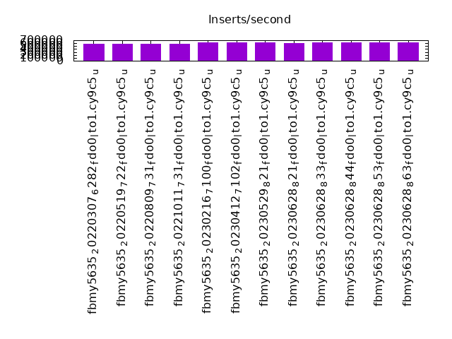
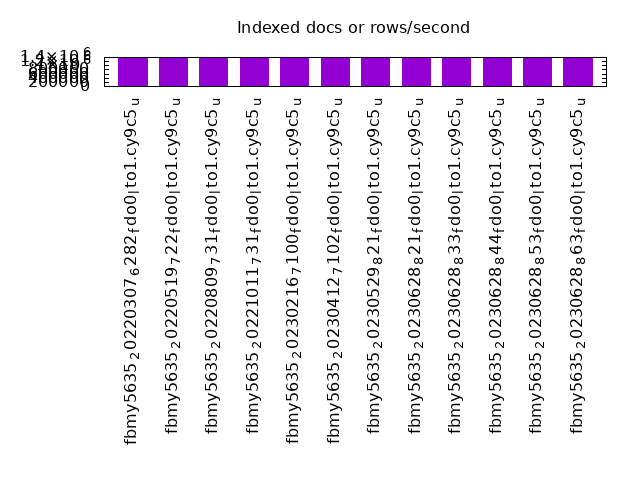
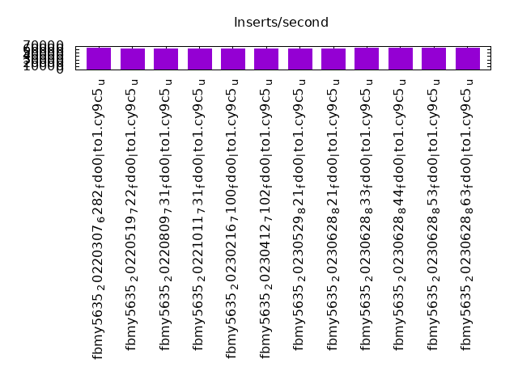
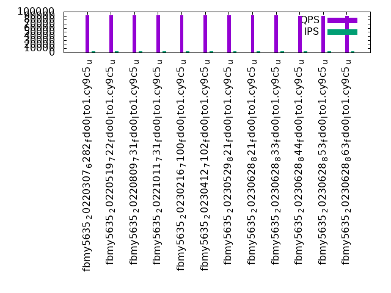
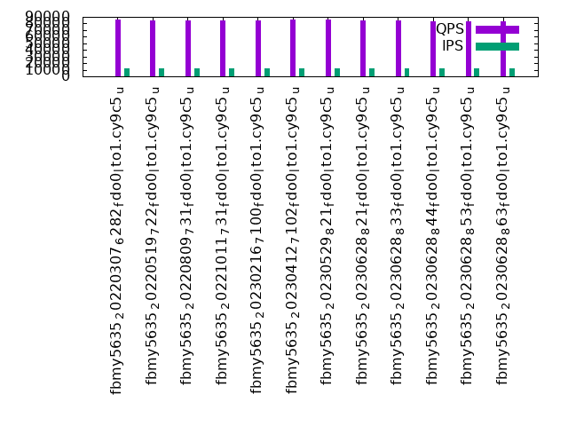
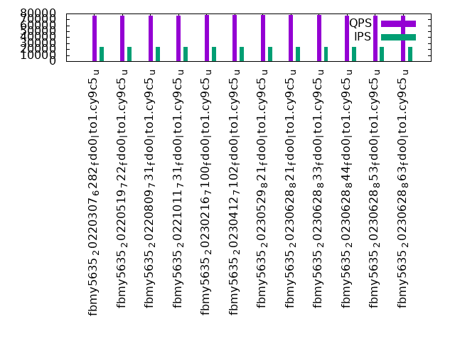

This is a report for the insert benchmark with 480M docs and 24 client(s). It is generated by scripts (bash, awk, sed) and Tufte might not be impressed. An overview of the insert benchmark is here and a short update is here. Below, by DBMS, I mean DBMS+version.config. An example is my8020.c10b40 where my means MySQL, 8020 is version 8.0.20 and c10b40 is the name for the configuration file.
The test server has 80 cores, hyperthreads enabled, 256G RAM and fast NVMe with XFS. The benchmark was run with 24 clients and there were 1 or 3 connections per client (1 for queries or inserts without rate limits, 1+1 for rate limited inserts+deletes). There are 24 tables, with a client per table. It loads 20M rows per-table without secondary indexes, creates secondary indexes, then inserts 50M rows per-table with a delete per insert to avoid growing the table. It then does 3 read+write tests for 3600s each that do queries as fast as possible with 100, 500 and then 1000 inserts/second/client concurrent with the queries and 1000 deletes/second to avoid growing the table. The database is cached by RocksDB.
The tested DBMS are:
The numbers are inserts/s for l.i0 and l.i1, indexed docs (or rows) /s for l.x and queries/s for q100, q500, q1000. The values are the average rate over the entire test for inserts (IPS) and queries (QPS). The range of values for IPS and QPS is split into 3 parts: bottom 25%, middle 50%, top 25%. Values in the bottom 25% have a red background, values in the top 25% have a green background and values in the middle have no color. A gray background is used for values that can be ignored because the DBMS did not sustain the target insert rate. Red backgrounds are not used when the minimum value is within 80% of the max value.
| dbms | l.i0 | l.x | l.i1 | q100.1 | q500.1 | q1000.1 |
|---|---|---|---|---|---|---|
| fbmy5635_20220307_6282_fdo0_lto1.cy9c5_u | 573477 | 1391594 | 64295 | 91418 | 85302 | 76500 |
| fbmy5635_20220519_722_fdo0_lto1.cy9c5_u | 567376 | 1352394 | 63428 | 91117 | 84429 | 76858 |
| fbmy5635_20220809_731_fdo0_lto1.cy9c5_u | 569395 | 1387572 | 63085 | 90913 | 84208 | 76281 |
| fbmy5635_20221011_731_fdo0_lto1.cy9c5_u | 569395 | 1383573 | 63244 | 90806 | 84485 | 76076 |
| fbmy5635_20230216_7100_fdo0_lto1.cy9c5_u | 625815 | 1360057 | 63884 | 90868 | 84851 | 77312 |
| fbmy5635_20230412_7102_fdo0_lto1.cy9c5_u | 616174 | 1371714 | 63711 | 91034 | 85744 | 77425 |
| fbmy5635_20230529_821_fdo0_lto1.cy9c5_u | 621762 | 1383573 | 63671 | 90887 | 85516 | 77526 |
| fbmy5635_20230628_821_fdo0_lto1.cy9c5_u | 614597 | 1356215 | 63556 | 90730 | 85088 | 77459 |
| fbmy5635_20230628_833_fdo0_lto1.cy9c5_u | 631579 | 1387572 | 64340 | 90646 | 84788 | 77419 |
| fbmy5635_20230628_844_fdo0_lto1.cy9c5_u | 629921 | 1341061 | 64488 | 89656 | 83590 | 76452 |
| fbmy5635_20230628_853_fdo0_lto1.cy9c5_u | 632411 | 1352394 | 64554 | 89852 | 83920 | 76383 |
| fbmy5635_20230628_863_fdo0_lto1.cy9c5_u | 629096 | 1367806 | 64150 | 89892 | 83810 | 76461 |
This table has relative throughput, throughput for the DBMS relative to the DBMS in the first line, using the absolute throughput from the previous table. Values less than 0.95 have a yellow background. Values greater than 1.05 have a blue background.
| dbms | l.i0 | l.x | l.i1 | q100.1 | q500.1 | q1000.1 |
|---|---|---|---|---|---|---|
| fbmy5635_20220307_6282_fdo0_lto1.cy9c5_u | 1.00 | 1.00 | 1.00 | 1.00 | 1.00 | 1.00 |
| fbmy5635_20220519_722_fdo0_lto1.cy9c5_u | 0.99 | 0.97 | 0.99 | 1.00 | 0.99 | 1.00 |
| fbmy5635_20220809_731_fdo0_lto1.cy9c5_u | 0.99 | 1.00 | 0.98 | 0.99 | 0.99 | 1.00 |
| fbmy5635_20221011_731_fdo0_lto1.cy9c5_u | 0.99 | 0.99 | 0.98 | 0.99 | 0.99 | 0.99 |
| fbmy5635_20230216_7100_fdo0_lto1.cy9c5_u | 1.09 | 0.98 | 0.99 | 0.99 | 0.99 | 1.01 |
| fbmy5635_20230412_7102_fdo0_lto1.cy9c5_u | 1.07 | 0.99 | 0.99 | 1.00 | 1.01 | 1.01 |
| fbmy5635_20230529_821_fdo0_lto1.cy9c5_u | 1.08 | 0.99 | 0.99 | 0.99 | 1.00 | 1.01 |
| fbmy5635_20230628_821_fdo0_lto1.cy9c5_u | 1.07 | 0.97 | 0.99 | 0.99 | 1.00 | 1.01 |
| fbmy5635_20230628_833_fdo0_lto1.cy9c5_u | 1.10 | 1.00 | 1.00 | 0.99 | 0.99 | 1.01 |
| fbmy5635_20230628_844_fdo0_lto1.cy9c5_u | 1.10 | 0.96 | 1.00 | 0.98 | 0.98 | 1.00 |
| fbmy5635_20230628_853_fdo0_lto1.cy9c5_u | 1.10 | 0.97 | 1.00 | 0.98 | 0.98 | 1.00 |
| fbmy5635_20230628_863_fdo0_lto1.cy9c5_u | 1.10 | 0.98 | 1.00 | 0.98 | 0.98 | 1.00 |
This lists the average rate of inserts/s for the tests that do inserts concurrent with queries. For such tests the query rate is listed in the table above. The read+write tests are setup so that the insert rate should match the target rate every second. Cells that are not at least 95% of the target have a red background to indicate a failure to satisfy the target.
| dbms | q100.1 | q500.1 | q1000.1 |
|---|---|---|---|
| fbmy5635_20220307_6282_fdo0_lto1.cy9c5_u | 2381 | 11907 | 23828 |
| fbmy5635_20220519_722_fdo0_lto1.cy9c5_u | 2381 | 11907 | 23828 |
| fbmy5635_20220809_731_fdo0_lto1.cy9c5_u | 2381 | 11907 | 23821 |
| fbmy5635_20221011_731_fdo0_lto1.cy9c5_u | 2381 | 11907 | 23828 |
| fbmy5635_20230216_7100_fdo0_lto1.cy9c5_u | 2381 | 11907 | 23834 |
| fbmy5635_20230412_7102_fdo0_lto1.cy9c5_u | 2381 | 11907 | 23828 |
| fbmy5635_20230529_821_fdo0_lto1.cy9c5_u | 2381 | 11907 | 23828 |
| fbmy5635_20230628_821_fdo0_lto1.cy9c5_u | 2381 | 11907 | 23828 |
| fbmy5635_20230628_833_fdo0_lto1.cy9c5_u | 2381 | 11907 | 23828 |
| fbmy5635_20230628_844_fdo0_lto1.cy9c5_u | 2381 | 11907 | 23828 |
| fbmy5635_20230628_853_fdo0_lto1.cy9c5_u | 2381 | 11907 | 23828 |
| fbmy5635_20230628_863_fdo0_lto1.cy9c5_u | 2382 | 11911 | 23828 |
| target | 2400 | 12000 | 24000 |
l.i0: load without secondary indexes. Graphs for performance per 1-second interval are here.
Average throughput:
Insert response time histogram: each cell has the percentage of responses that take <= the time in the header and max is the max response time in seconds. For the max column values in the top 25% of the range have a red background and in the bottom 25% of the range have a green background. The red background is not used when the min value is within 80% of the max value.
| dbms | 256us | 1ms | 4ms | 16ms | 64ms | 256ms | 1s | 4s | 16s | gt | max |
|---|---|---|---|---|---|---|---|---|---|---|---|
| fbmy5635_20220307_6282_fdo0_lto1.cy9c5_u | 0.065 | 58.952 | 40.941 | 0.001 | 0.041 | 0.095 | |||||
| fbmy5635_20220519_722_fdo0_lto1.cy9c5_u | 0.051 | 54.566 | 45.341 | 0.041 | 0.106 | ||||||
| fbmy5635_20220809_731_fdo0_lto1.cy9c5_u | 0.077 | 57.021 | 42.860 | nonzero | 0.041 | 0.099 | |||||
| fbmy5635_20221011_731_fdo0_lto1.cy9c5_u | 0.082 | 55.574 | 44.301 | 0.001 | 0.042 | 0.105 | |||||
| fbmy5635_20230216_7100_fdo0_lto1.cy9c5_u | 0.034 | 76.457 | 23.467 | 0.042 | 0.102 | ||||||
| fbmy5635_20230412_7102_fdo0_lto1.cy9c5_u | 0.051 | 74.685 | 25.220 | 0.002 | 0.042 | 0.103 | |||||
| fbmy5635_20230529_821_fdo0_lto1.cy9c5_u | 0.066 | 76.069 | 23.823 | 0.042 | 0.094 | ||||||
| fbmy5635_20230628_821_fdo0_lto1.cy9c5_u | 0.062 | 73.548 | 26.348 | 0.042 | 0.097 | ||||||
| fbmy5635_20230628_833_fdo0_lto1.cy9c5_u | 0.071 | 77.814 | 22.072 | 0.001 | 0.042 | 0.100 | |||||
| fbmy5635_20230628_844_fdo0_lto1.cy9c5_u | 0.063 | 76.589 | 23.305 | nonzero | 0.042 | 0.107 | |||||
| fbmy5635_20230628_853_fdo0_lto1.cy9c5_u | 0.069 | 78.394 | 21.495 | nonzero | 0.042 | 0.096 | |||||
| fbmy5635_20230628_863_fdo0_lto1.cy9c5_u | 0.065 | 76.810 | 23.083 | nonzero | 0.042 | 0.094 |
Performance metrics for the DBMS listed above. Some are normalized by throughput, others are not. Legend for results is here.
ips qps rps rmbps wps wmbps rpq rkbpq wpi wkbpi csps cpups cspq cpupq dbgb1 dbgb2 rss maxop p50 p99 tag 573477 0 0 0.0 2335.4 276.8 0.000 0.000 0.004 0.494 512243 41.7 0.893 58 15.4 16.6 5.0 0.095 24678 13885 480m.fbmy5635_20220307_6282_fdo0_lto1.cy9c5_u 567376 0 0 0.0 2266.4 273.3 0.000 0.000 0.004 0.493 537867 41.5 0.948 59 15.5 16.6 4.9 0.106 24276 18282 480m.fbmy5635_20220519_722_fdo0_lto1.cy9c5_u 569395 0 0 0.0 2276.0 272.5 0.000 0.000 0.004 0.490 513438 41.1 0.902 58 15.7 16.9 5.0 0.099 24473 14783 480m.fbmy5635_20220809_731_fdo0_lto1.cy9c5_u 569395 0 0 0.0 2277.2 273.5 0.000 0.000 0.004 0.492 528449 41.5 0.928 58 15.6 16.7 5.0 0.105 24476 17085 480m.fbmy5635_20221011_731_fdo0_lto1.cy9c5_u 625815 0 0 0.0 2166.7 260.5 0.000 0.000 0.003 0.426 309333 39.2 0.494 50 15.3 16.5 4.0 0.102 26973 19980 480m.fbmy5635_20230216_7100_fdo0_lto1.cy9c5_u 616174 0 0 0.0 2059.0 246.8 0.000 0.000 0.003 0.410 316187 39.3 0.513 51 15.1 16.2 4.0 0.103 26870 20979 480m.fbmy5635_20230412_7102_fdo0_lto1.cy9c5_u 621762 0 0 0.0 2083.1 249.9 0.000 0.000 0.003 0.412 302154 38.7 0.486 50 15.2 16.3 3.9 0.094 26873 18382 480m.fbmy5635_20230529_821_fdo0_lto1.cy9c5_u 614597 0 0 0.0 2074.0 248.7 0.000 0.000 0.003 0.414 341495 39.9 0.556 52 15.2 16.4 4.0 0.097 26371 19880 480m.fbmy5635_20230628_821_fdo0_lto1.cy9c5_u 631579 0 0 0.0 2114.8 254.0 0.000 0.000 0.003 0.412 317784 39.4 0.503 50 15.2 16.4 4.0 0.100 27073 20080 480m.fbmy5635_20230628_833_fdo0_lto1.cy9c5_u 629921 0 0 0.0 2071.0 248.3 0.000 0.000 0.003 0.404 325655 39.7 0.517 50 15.2 16.3 3.9 0.107 26773 20080 480m.fbmy5635_20230628_844_fdo0_lto1.cy9c5_u 632411 0 0 0.0 2083.8 249.7 0.000 0.000 0.003 0.404 289243 38.9 0.457 49 15.1 16.3 4.0 0.096 27173 22178 480m.fbmy5635_20230628_853_fdo0_lto1.cy9c5_u 629096 0 0 0.0 2154.1 259.2 0.000 0.000 0.003 0.422 293418 39.4 0.466 50 15.1 16.3 4.0 0.094 27073 21379 480m.fbmy5635_20230628_863_fdo0_lto1.cy9c5_u
l.x: create secondary indexes.
Average throughput:
Performance metrics for the DBMS listed above. Some are normalized by throughput, others are not. Legend for results is here.
ips qps rps rmbps wps wmbps rpq rkbpq wpi wkbpi csps cpups cspq cpupq dbgb1 dbgb2 rss maxop p50 p99 tag 1391594 0 29 0.2 1840.7 201.3 0.000 0.000 0.001 0.148 25421 29.2 0.018 17 32.4 33.5 44.5 0.003 NA NA 480m.fbmy5635_20220307_6282_fdo0_lto1.cy9c5_u 1352394 0 28 0.2 1817.5 199.5 0.000 0.000 0.001 0.151 25323 28.7 0.019 17 32.4 33.5 45.3 0.003 NA NA 480m.fbmy5635_20220519_722_fdo0_lto1.cy9c5_u 1387572 0 29 0.2 1894.1 207.7 0.000 0.000 0.001 0.153 26813 29.9 0.019 17 32.4 33.6 47.2 0.004 NA NA 480m.fbmy5635_20220809_731_fdo0_lto1.cy9c5_u 1383573 0 29 0.2 1869.2 204.8 0.000 0.000 0.001 0.152 24781 29.2 0.018 17 32.4 33.5 43.4 0.002 NA NA 480m.fbmy5635_20221011_731_fdo0_lto1.cy9c5_u 1360057 0 28 0.2 1717.7 187.2 0.000 0.000 0.001 0.141 26178 28.9 0.019 17 32.4 33.5 40.4 0.003 NA NA 480m.fbmy5635_20230216_7100_fdo0_lto1.cy9c5_u 1371714 0 29 0.2 1735.4 189.0 0.000 0.000 0.001 0.141 25356 28.6 0.018 17 32.3 33.4 40.5 0.003 NA NA 480m.fbmy5635_20230412_7102_fdo0_lto1.cy9c5_u 1383573 0 28 0.2 1754.4 191.1 0.000 0.000 0.001 0.141 23588 28.9 0.017 17 32.3 33.5 42.4 0.003 NA NA 480m.fbmy5635_20230529_821_fdo0_lto1.cy9c5_u 1356215 0 28 0.2 1707.4 186.3 0.000 0.000 0.001 0.141 24704 28.5 0.018 17 32.4 33.5 42.1 0.002 NA NA 480m.fbmy5635_20230628_821_fdo0_lto1.cy9c5_u 1387572 0 29 0.2 1764.3 192.2 0.000 0.000 0.001 0.142 24630 29.0 0.018 17 32.3 33.5 39.3 0.003 NA NA 480m.fbmy5635_20230628_833_fdo0_lto1.cy9c5_u 1341061 0 28 0.2 1683.5 183.6 0.000 0.000 0.001 0.140 25090 28.5 0.019 17 32.4 33.5 41.4 0.003 NA NA 480m.fbmy5635_20230628_844_fdo0_lto1.cy9c5_u 1352394 0 28 0.2 1706.8 186.2 0.000 0.000 0.001 0.141 23955 28.7 0.018 17 32.4 33.5 40.7 0.003 NA NA 480m.fbmy5635_20230628_853_fdo0_lto1.cy9c5_u 1367806 0 28 0.2 1733.6 188.9 0.000 0.000 0.001 0.141 25467 29.2 0.019 17 32.4 33.5 40.7 0.003 NA NA 480m.fbmy5635_20230628_863_fdo0_lto1.cy9c5_u
l.i1: continue load after secondary indexes created. Graphs for performance per 1-second interval are here.
Average throughput:
Insert response time histogram: each cell has the percentage of responses that take <= the time in the header and max is the max response time in seconds. For the max column values in the top 25% of the range have a red background and in the bottom 25% of the range have a green background. The red background is not used when the min value is within 80% of the max value.
| dbms | 256us | 1ms | 4ms | 16ms | 64ms | 256ms | 1s | 4s | 16s | gt | max |
|---|---|---|---|---|---|---|---|---|---|---|---|
| fbmy5635_20220307_6282_fdo0_lto1.cy9c5_u | 0.038 | 19.141 | 80.819 | 0.001 | 0.104 | ||||||
| fbmy5635_20220519_722_fdo0_lto1.cy9c5_u | 0.036 | 17.833 | 82.128 | 0.004 | 0.153 | ||||||
| fbmy5635_20220809_731_fdo0_lto1.cy9c5_u | 0.035 | 17.253 | 82.709 | 0.003 | 0.147 | ||||||
| fbmy5635_20221011_731_fdo0_lto1.cy9c5_u | 0.034 | 17.511 | 82.452 | 0.003 | 0.147 | ||||||
| fbmy5635_20230216_7100_fdo0_lto1.cy9c5_u | 0.037 | 18.434 | 81.526 | 0.003 | 0.154 | ||||||
| fbmy5635_20230412_7102_fdo0_lto1.cy9c5_u | 0.034 | 17.955 | 82.008 | 0.003 | 0.144 | ||||||
| fbmy5635_20230529_821_fdo0_lto1.cy9c5_u | 0.034 | 17.886 | 82.077 | 0.003 | 0.153 | ||||||
| fbmy5635_20230628_821_fdo0_lto1.cy9c5_u | 0.035 | 17.730 | 82.232 | 0.003 | 0.196 | ||||||
| fbmy5635_20230628_833_fdo0_lto1.cy9c5_u | 0.038 | 18.888 | 81.072 | 0.002 | 0.156 | ||||||
| fbmy5635_20230628_844_fdo0_lto1.cy9c5_u | 0.039 | 19.270 | 80.688 | 0.002 | 0.216 | ||||||
| fbmy5635_20230628_853_fdo0_lto1.cy9c5_u | 0.033 | 19.407 | 80.558 | 0.003 | 0.156 | ||||||
| fbmy5635_20230628_863_fdo0_lto1.cy9c5_u | 0.036 | 18.596 | 81.366 | 0.003 | 0.142 |
Delete response time histogram: each cell has the percentage of responses that take <= the time in the header and max is the max response time in seconds. For the max column values in the top 25% of the range have a red background and in the bottom 25% of the range have a green background. The red background is not used when the min value is within 80% of the max value.
| dbms | 256us | 1ms | 4ms | 16ms | 64ms | 256ms | 1s | 4s | 16s | gt | max |
|---|---|---|---|---|---|---|---|---|---|---|---|
| fbmy5635_20220307_6282_fdo0_lto1.cy9c5_u | nonzero | 0.038 | 21.467 | 78.493 | 0.002 | 0.200 | |||||
| fbmy5635_20220519_722_fdo0_lto1.cy9c5_u | nonzero | 0.037 | 19.734 | 80.225 | 0.004 | 0.160 | |||||
| fbmy5635_20220809_731_fdo0_lto1.cy9c5_u | nonzero | 0.036 | 18.869 | 81.091 | 0.004 | 0.154 | |||||
| fbmy5635_20221011_731_fdo0_lto1.cy9c5_u | 0.034 | 19.388 | 80.574 | 0.003 | 0.149 | ||||||
| fbmy5635_20230216_7100_fdo0_lto1.cy9c5_u | nonzero | 0.037 | 21.128 | 78.831 | 0.004 | 0.212 | |||||
| fbmy5635_20230412_7102_fdo0_lto1.cy9c5_u | nonzero | 0.034 | 20.598 | 79.364 | 0.004 | 0.237 | |||||
| fbmy5635_20230529_821_fdo0_lto1.cy9c5_u | nonzero | 0.035 | 20.209 | 79.753 | 0.004 | 0.230 | |||||
| fbmy5635_20230628_821_fdo0_lto1.cy9c5_u | 0.035 | 20.103 | 79.858 | 0.003 | 0.224 | ||||||
| fbmy5635_20230628_833_fdo0_lto1.cy9c5_u | nonzero | 0.037 | 21.383 | 78.577 | 0.003 | 0.187 | |||||
| fbmy5635_20230628_844_fdo0_lto1.cy9c5_u | nonzero | 0.039 | 21.973 | 77.985 | 0.003 | 0.217 | |||||
| fbmy5635_20230628_853_fdo0_lto1.cy9c5_u | 0.033 | 22.183 | 77.781 | 0.003 | 0.223 | ||||||
| fbmy5635_20230628_863_fdo0_lto1.cy9c5_u | nonzero | 0.036 | 20.963 | 78.998 | 0.003 | 0.231 |
Performance metrics for the DBMS listed above. Some are normalized by throughput, others are not. Legend for results is here.
ips qps rps rmbps wps wmbps rpq rkbpq wpi wkbpi csps cpups cspq cpupq dbgb1 dbgb2 rss maxop p50 p99 tag 64295 0 170 1.6 1751.8 204.0 0.003 0.026 0.027 3.249 124579 17.7 1.938 220 37.6 37.7 176.9 0.104 2697 2397 480m.fbmy5635_20220307_6282_fdo0_lto1.cy9c5_u 63428 0 184 1.4 1725.2 204.2 0.003 0.023 0.027 3.297 123931 17.8 1.954 225 37.3 37.4 177.0 0.153 2647 2348 480m.fbmy5635_20220519_722_fdo0_lto1.cy9c5_u 63085 0 94 1.1 1730.4 206.3 0.001 0.017 0.027 3.349 122364 17.7 1.940 224 37.3 37.4 176.9 0.147 2647 2348 480m.fbmy5635_20220809_731_fdo0_lto1.cy9c5_u 63244 0 93 1.1 1722.5 204.8 0.001 0.017 0.027 3.316 122694 17.7 1.940 224 40.3 40.4 176.9 0.147 2647 2348 480m.fbmy5635_20221011_731_fdo0_lto1.cy9c5_u 63884 0 52 0.9 1538.9 181.7 0.001 0.015 0.024 2.912 115752 17.2 1.812 215 38.2 38.3 177.3 0.154 2649 2397 480m.fbmy5635_20230216_7100_fdo0_lto1.cy9c5_u 63711 0 56 1.0 1534.2 182.4 0.001 0.016 0.024 2.932 113447 17.2 1.781 216 40.0 40.1 177.2 0.144 2648 2348 480m.fbmy5635_20230412_7102_fdo0_lto1.cy9c5_u 63671 0 55 1.0 1530.4 182.0 0.001 0.015 0.024 2.927 114550 17.2 1.799 216 38.3 38.4 177.2 0.153 2648 2348 480m.fbmy5635_20230529_821_fdo0_lto1.cy9c5_u 63556 0 49 0.9 1521.6 179.5 0.001 0.014 0.024 2.892 115578 17.6 1.819 222 38.8 38.9 177.2 0.196 2647 2348 480m.fbmy5635_20230628_821_fdo0_lto1.cy9c5_u 64340 0 49 0.9 1541.2 183.7 0.001 0.014 0.024 2.924 116378 17.4 1.809 216 40.1 40.2 177.3 0.156 2697 2398 480m.fbmy5635_20230628_833_fdo0_lto1.cy9c5_u 64488 0 50 0.9 1539.7 183.3 0.001 0.014 0.024 2.910 115917 17.7 1.797 220 38.0 38.1 177.2 0.216 2697 2398 480m.fbmy5635_20230628_844_fdo0_lto1.cy9c5_u 64554 0 57 0.9 1555.4 185.3 0.001 0.015 0.024 2.940 115578 17.5 1.790 217 41.0 41.2 177.2 0.156 2697 2398 480m.fbmy5635_20230628_853_fdo0_lto1.cy9c5_u 64150 0 74 1.3 1550.3 184.5 0.001 0.021 0.024 2.945 114802 17.3 1.790 216 37.7 37.8 177.3 0.142 2697 2398 480m.fbmy5635_20230628_863_fdo0_lto1.cy9c5_u
q100.1: range queries with 100 insert/s per client. Graphs for performance per 1-second interval are here.
Average throughput:
Query response time histogram: each cell has the percentage of responses that take <= the time in the header and max is the max response time in seconds. For max values in the top 25% of the range have a red background and in the bottom 25% of the range have a green background. The red background is not used when the min value is within 80% of the max value.
| dbms | 256us | 1ms | 4ms | 16ms | 64ms | 256ms | 1s | 4s | 16s | gt | max |
|---|---|---|---|---|---|---|---|---|---|---|---|
| fbmy5635_20220307_6282_fdo0_lto1.cy9c5_u | 58.973 | 41.026 | 0.001 | nonzero | nonzero | nonzero | 0.080 | ||||
| fbmy5635_20220519_722_fdo0_lto1.cy9c5_u | 58.268 | 41.730 | 0.002 | nonzero | nonzero | nonzero | 0.066 | ||||
| fbmy5635_20220809_731_fdo0_lto1.cy9c5_u | 57.864 | 42.135 | 0.001 | nonzero | nonzero | nonzero | 0.068 | ||||
| fbmy5635_20221011_731_fdo0_lto1.cy9c5_u | 57.760 | 42.239 | 0.001 | nonzero | nonzero | 0.059 | |||||
| fbmy5635_20230216_7100_fdo0_lto1.cy9c5_u | 58.081 | 41.918 | 0.001 | nonzero | nonzero | 0.064 | |||||
| fbmy5635_20230412_7102_fdo0_lto1.cy9c5_u | 58.318 | 41.680 | 0.001 | nonzero | nonzero | 0.057 | |||||
| fbmy5635_20230529_821_fdo0_lto1.cy9c5_u | 58.167 | 41.831 | 0.001 | nonzero | nonzero | nonzero | 0.066 | ||||
| fbmy5635_20230628_821_fdo0_lto1.cy9c5_u | 57.541 | 42.457 | 0.001 | nonzero | nonzero | 0.022 | |||||
| fbmy5635_20230628_833_fdo0_lto1.cy9c5_u | 57.624 | 42.375 | 0.001 | nonzero | nonzero | 0.031 | |||||
| fbmy5635_20230628_844_fdo0_lto1.cy9c5_u | 55.432 | 44.566 | 0.001 | nonzero | nonzero | 0.061 | |||||
| fbmy5635_20230628_853_fdo0_lto1.cy9c5_u | 55.925 | 44.074 | 0.001 | nonzero | nonzero | nonzero | 0.078 | ||||
| fbmy5635_20230628_863_fdo0_lto1.cy9c5_u | 55.914 | 44.084 | 0.001 | nonzero | nonzero | 0.062 |
Insert response time histogram: each cell has the percentage of responses that take <= the time in the header and max is the max response time in seconds. For max values in the top 25% of the range have a red background and in the bottom 25% of the range have a green background. The red background is not used when the min value is within 80% of the max value.
| dbms | 256us | 1ms | 4ms | 16ms | 64ms | 256ms | 1s | 4s | 16s | gt | max |
|---|---|---|---|---|---|---|---|---|---|---|---|
| fbmy5635_20220307_6282_fdo0_lto1.cy9c5_u | 99.998 | 0.002 | 0.006 | ||||||||
| fbmy5635_20220519_722_fdo0_lto1.cy9c5_u | 99.992 | 0.008 | 0.010 | ||||||||
| fbmy5635_20220809_731_fdo0_lto1.cy9c5_u | 99.997 | 0.003 | 0.007 | ||||||||
| fbmy5635_20221011_731_fdo0_lto1.cy9c5_u | 99.998 | 0.002 | 0.006 | ||||||||
| fbmy5635_20230216_7100_fdo0_lto1.cy9c5_u | 99.981 | 0.016 | 0.002 | 0.046 | |||||||
| fbmy5635_20230412_7102_fdo0_lto1.cy9c5_u | 99.991 | 0.009 | 0.015 | ||||||||
| fbmy5635_20230529_821_fdo0_lto1.cy9c5_u | 99.955 | 0.044 | 0.001 | 0.024 | |||||||
| fbmy5635_20230628_821_fdo0_lto1.cy9c5_u | 99.263 | 0.737 | 0.007 | ||||||||
| fbmy5635_20230628_833_fdo0_lto1.cy9c5_u | 99.991 | 0.009 | 0.007 | ||||||||
| fbmy5635_20230628_844_fdo0_lto1.cy9c5_u | 99.763 | 0.237 | 0.007 | ||||||||
| fbmy5635_20230628_853_fdo0_lto1.cy9c5_u | 99.922 | 0.078 | 0.006 | ||||||||
| fbmy5635_20230628_863_fdo0_lto1.cy9c5_u | 99.924 | 0.076 | 0.014 |
Delete response time histogram: each cell has the percentage of responses that take <= the time in the header and max is the max response time in seconds. For max values in the top 25% of the range have a red background and in the bottom 25% of the range have a green background. The red background is not used when the min value is within 80% of the max value.
| dbms | 256us | 1ms | 4ms | 16ms | 64ms | 256ms | 1s | 4s | 16s | gt | max |
|---|---|---|---|---|---|---|---|---|---|---|---|
| fbmy5635_20220307_6282_fdo0_lto1.cy9c5_u | 99.995 | 0.003 | 0.001 | 0.050 | |||||||
| fbmy5635_20220519_722_fdo0_lto1.cy9c5_u | 99.994 | 0.004 | 0.002 | 0.062 | |||||||
| fbmy5635_20220809_731_fdo0_lto1.cy9c5_u | 99.996 | 0.002 | 0.002 | 0.063 | |||||||
| fbmy5635_20221011_731_fdo0_lto1.cy9c5_u | 99.993 | 0.005 | 0.002 | 0.055 | |||||||
| fbmy5635_20230216_7100_fdo0_lto1.cy9c5_u | 99.987 | 0.005 | 0.008 | 0.001 | 0.085 | ||||||
| fbmy5635_20230412_7102_fdo0_lto1.cy9c5_u | 99.990 | 0.009 | 0.001 | 0.032 | |||||||
| fbmy5635_20230529_821_fdo0_lto1.cy9c5_u | 99.975 | 0.022 | 0.003 | 0.046 | |||||||
| fbmy5635_20230628_821_fdo0_lto1.cy9c5_u | 99.448 | 0.549 | 0.003 | 0.046 | |||||||
| fbmy5635_20230628_833_fdo0_lto1.cy9c5_u | 99.991 | 0.007 | 0.002 | 0.058 | |||||||
| fbmy5635_20230628_844_fdo0_lto1.cy9c5_u | 99.911 | 0.087 | 0.002 | 0.001 | 0.077 | ||||||
| fbmy5635_20230628_853_fdo0_lto1.cy9c5_u | 99.966 | 0.033 | 0.001 | 0.068 | |||||||
| fbmy5635_20230628_863_fdo0_lto1.cy9c5_u | 99.968 | 0.030 | 0.002 | 0.057 |
Performance metrics for the DBMS listed above. Some are normalized by throughput, others are not. Legend for results is here.
ips qps rps rmbps wps wmbps rpq rkbpq wpi wkbpi csps cpups cspq cpupq dbgb1 dbgb2 rss maxop p50 p99 tag 2381 91418 9 0.1 100.2 11.4 0.000 0.001 0.042 4.909 403946 31.8 4.419 278 36.1 38.0 178.2 0.080 3836 3341 480m.fbmy5635_20220307_6282_fdo0_lto1.cy9c5_u 2381 91117 7 0.1 94.5 10.7 0.000 0.001 0.040 4.603 399069 31.9 4.380 280 36.1 38.0 178.3 0.066 3756 3341 480m.fbmy5635_20220519_722_fdo0_lto1.cy9c5_u 2381 90913 7 0.1 95.6 10.6 0.000 0.001 0.040 4.553 400821 31.8 4.409 280 36.1 38.0 178.2 0.068 3790 3341 480m.fbmy5635_20220809_731_fdo0_lto1.cy9c5_u 2381 90806 8 0.1 97.5 10.8 0.000 0.001 0.041 4.661 400707 31.9 4.413 281 36.2 38.1 178.2 0.059 3820 3357 480m.fbmy5635_20221011_731_fdo0_lto1.cy9c5_u 2381 90868 13 0.3 82.7 9.2 0.000 0.004 0.035 3.950 393962 31.7 4.336 279 37.0 39.0 178.8 0.064 3756 3341 480m.fbmy5635_20230216_7100_fdo0_lto1.cy9c5_u 2381 91034 13 0.4 83.5 9.3 0.000 0.004 0.035 4.010 393887 31.8 4.327 279 37.1 39.0 178.7 0.057 3804 3325 480m.fbmy5635_20230412_7102_fdo0_lto1.cy9c5_u 2381 90887 10 0.3 78.2 8.6 0.000 0.003 0.033 3.716 394855 31.8 4.344 280 37.1 39.1 178.7 0.066 3836 3389 480m.fbmy5635_20230529_821_fdo0_lto1.cy9c5_u 2381 90730 16 0.3 83.2 9.3 0.000 0.004 0.035 3.993 394084 32.0 4.343 282 37.1 39.1 178.7 0.022 3772 3357 480m.fbmy5635_20230628_821_fdo0_lto1.cy9c5_u 2381 90646 13 0.3 79.8 8.9 0.000 0.004 0.034 3.807 393647 31.8 4.343 281 37.3 39.2 178.6 0.031 3772 3309 480m.fbmy5635_20230628_833_fdo0_lto1.cy9c5_u 2381 89656 13 0.3 82.8 9.2 0.000 0.004 0.035 3.965 390070 31.8 4.351 284 37.1 39.0 178.8 0.061 3724 3293 480m.fbmy5635_20230628_844_fdo0_lto1.cy9c5_u 2381 89852 34 0.4 79.4 8.8 0.000 0.004 0.033 3.784 388379 31.8 4.322 283 37.1 39.1 178.7 0.078 3741 3325 480m.fbmy5635_20230628_853_fdo0_lto1.cy9c5_u 2382 89892 22 0.3 78.0 8.6 0.000 0.004 0.033 3.705 389032 31.8 4.328 283 37.1 39.1 178.6 0.062 3772 3277 480m.fbmy5635_20230628_863_fdo0_lto1.cy9c5_u
q500.1: range queries with 500 insert/s per client. Graphs for performance per 1-second interval are here.
Average throughput:
Query response time histogram: each cell has the percentage of responses that take <= the time in the header and max is the max response time in seconds. For max values in the top 25% of the range have a red background and in the bottom 25% of the range have a green background. The red background is not used when the min value is within 80% of the max value.
| dbms | 256us | 1ms | 4ms | 16ms | 64ms | 256ms | 1s | 4s | 16s | gt | max |
|---|---|---|---|---|---|---|---|---|---|---|---|
| fbmy5635_20220307_6282_fdo0_lto1.cy9c5_u | 45.208 | 54.790 | 0.002 | nonzero | nonzero | nonzero | 0.085 | ||||
| fbmy5635_20220519_722_fdo0_lto1.cy9c5_u | 43.139 | 56.859 | 0.002 | nonzero | nonzero | nonzero | 0.130 | ||||
| fbmy5635_20220809_731_fdo0_lto1.cy9c5_u | 42.408 | 57.590 | 0.002 | nonzero | nonzero | nonzero | 0.089 | ||||
| fbmy5635_20221011_731_fdo0_lto1.cy9c5_u | 43.117 | 56.881 | 0.002 | nonzero | nonzero | nonzero | 0.148 | ||||
| fbmy5635_20230216_7100_fdo0_lto1.cy9c5_u | 44.211 | 55.785 | 0.003 | nonzero | nonzero | nonzero | 0.184 | ||||
| fbmy5635_20230412_7102_fdo0_lto1.cy9c5_u | 46.311 | 53.686 | 0.002 | nonzero | nonzero | nonzero | 0.124 | ||||
| fbmy5635_20230529_821_fdo0_lto1.cy9c5_u | 45.699 | 54.298 | 0.002 | nonzero | nonzero | nonzero | 0.101 | ||||
| fbmy5635_20230628_821_fdo0_lto1.cy9c5_u | 44.698 | 55.300 | 0.002 | nonzero | nonzero | nonzero | 0.085 | ||||
| fbmy5635_20230628_833_fdo0_lto1.cy9c5_u | 43.873 | 56.124 | 0.002 | nonzero | nonzero | nonzero | 0.098 | ||||
| fbmy5635_20230628_844_fdo0_lto1.cy9c5_u | 40.939 | 59.058 | 0.003 | nonzero | nonzero | 0.001 | 0.088 | ||||
| fbmy5635_20230628_853_fdo0_lto1.cy9c5_u | 41.885 | 58.112 | 0.002 | nonzero | nonzero | nonzero | 0.087 | ||||
| fbmy5635_20230628_863_fdo0_lto1.cy9c5_u | 41.463 | 58.534 | 0.003 | nonzero | nonzero | nonzero | 0.100 |
Insert response time histogram: each cell has the percentage of responses that take <= the time in the header and max is the max response time in seconds. For max values in the top 25% of the range have a red background and in the bottom 25% of the range have a green background. The red background is not used when the min value is within 80% of the max value.
| dbms | 256us | 1ms | 4ms | 16ms | 64ms | 256ms | 1s | 4s | 16s | gt | max |
|---|---|---|---|---|---|---|---|---|---|---|---|
| fbmy5635_20220307_6282_fdo0_lto1.cy9c5_u | 99.988 | 0.010 | 0.002 | 0.001 | 0.078 | ||||||
| fbmy5635_20220519_722_fdo0_lto1.cy9c5_u | 99.024 | 0.972 | 0.002 | 0.002 | 0.085 | ||||||
| fbmy5635_20220809_731_fdo0_lto1.cy9c5_u | 99.965 | 0.032 | 0.002 | 0.001 | 0.087 | ||||||
| fbmy5635_20221011_731_fdo0_lto1.cy9c5_u | 99.983 | 0.014 | 0.002 | 0.001 | 0.081 | ||||||
| fbmy5635_20230216_7100_fdo0_lto1.cy9c5_u | 22.578 | 59.564 | 17.855 | 0.003 | 0.095 | ||||||
| fbmy5635_20230412_7102_fdo0_lto1.cy9c5_u | 52.056 | 47.916 | 0.026 | 0.002 | 0.088 | ||||||
| fbmy5635_20230529_821_fdo0_lto1.cy9c5_u | 46.158 | 53.787 | 0.054 | 0.001 | 0.085 | ||||||
| fbmy5635_20230628_821_fdo0_lto1.cy9c5_u | 59.673 | 40.321 | 0.003 | 0.003 | 0.092 | ||||||
| fbmy5635_20230628_833_fdo0_lto1.cy9c5_u | 22.495 | 73.434 | 4.070 | 0.001 | 0.088 | ||||||
| fbmy5635_20230628_844_fdo0_lto1.cy9c5_u | 26.847 | 68.471 | 4.675 | 0.007 | 0.098 | ||||||
| fbmy5635_20230628_853_fdo0_lto1.cy9c5_u | 42.324 | 57.400 | 0.275 | 0.001 | 0.089 | ||||||
| fbmy5635_20230628_863_fdo0_lto1.cy9c5_u | 20.760 | 69.642 | 9.593 | 0.004 | 0.099 |
Delete response time histogram: each cell has the percentage of responses that take <= the time in the header and max is the max response time in seconds. For max values in the top 25% of the range have a red background and in the bottom 25% of the range have a green background. The red background is not used when the min value is within 80% of the max value.
| dbms | 256us | 1ms | 4ms | 16ms | 64ms | 256ms | 1s | 4s | 16s | gt | max |
|---|---|---|---|---|---|---|---|---|---|---|---|
| fbmy5635_20220307_6282_fdo0_lto1.cy9c5_u | 99.981 | 0.008 | 0.009 | 0.002 | 0.093 | ||||||
| fbmy5635_20220519_722_fdo0_lto1.cy9c5_u | 99.181 | 0.804 | 0.011 | 0.003 | 0.087 | ||||||
| fbmy5635_20220809_731_fdo0_lto1.cy9c5_u | 99.966 | 0.022 | 0.009 | 0.003 | 0.092 | ||||||
| fbmy5635_20221011_731_fdo0_lto1.cy9c5_u | 99.977 | 0.008 | 0.012 | 0.003 | 0.091 | ||||||
| fbmy5635_20230216_7100_fdo0_lto1.cy9c5_u | 23.221 | 60.254 | 16.520 | 0.005 | 0.095 | ||||||
| fbmy5635_20230412_7102_fdo0_lto1.cy9c5_u | 56.794 | 43.170 | 0.033 | 0.003 | 0.089 | ||||||
| fbmy5635_20230529_821_fdo0_lto1.cy9c5_u | 49.904 | 50.039 | 0.055 | 0.002 | 0.084 | ||||||
| fbmy5635_20230628_821_fdo0_lto1.cy9c5_u | 63.980 | 36.005 | 0.011 | 0.005 | 0.092 | ||||||
| fbmy5635_20230628_833_fdo0_lto1.cy9c5_u | 24.215 | 72.193 | 3.590 | 0.002 | 0.087 | ||||||
| fbmy5635_20230628_844_fdo0_lto1.cy9c5_u | 28.420 | 67.448 | 4.124 | 0.008 | 0.098 | ||||||
| fbmy5635_20230628_853_fdo0_lto1.cy9c5_u | 45.203 | 54.556 | 0.240 | 0.002 | 0.091 | ||||||
| fbmy5635_20230628_863_fdo0_lto1.cy9c5_u | 22.341 | 68.993 | 8.660 | 0.006 | 0.104 |
Performance metrics for the DBMS listed above. Some are normalized by throughput, others are not. Legend for results is here.
ips qps rps rmbps wps wmbps rpq rkbpq wpi wkbpi csps cpups cspq cpupq dbgb1 dbgb2 rss maxop p50 p99 tag 11907 85302 30 0.3 358.4 41.8 0.000 0.003 0.030 3.596 389955 33.8 4.571 317 36.5 37.6 183.2 0.085 3548 3053 480m.fbmy5635_20220307_6282_fdo0_lto1.cy9c5_u 11907 84429 25 0.2 357.4 41.6 0.000 0.002 0.030 3.579 383423 33.8 4.541 320 36.5 37.7 183.2 0.130 3548 3053 480m.fbmy5635_20220519_722_fdo0_lto1.cy9c5_u 11907 84208 24 0.2 358.3 41.0 0.000 0.003 0.030 3.522 386444 33.9 4.589 322 37.0 38.1 183.1 0.089 3532 3053 480m.fbmy5635_20220809_731_fdo0_lto1.cy9c5_u 11907 84485 25 0.3 359.3 41.8 0.000 0.003 0.030 3.599 386328 33.9 4.573 321 36.7 37.9 183.3 0.148 3548 3069 480m.fbmy5635_20221011_731_fdo0_lto1.cy9c5_u 11907 84851 14 0.2 325.3 37.7 0.000 0.002 0.027 3.244 385963 34.2 4.549 322 37.5 38.7 183.2 0.184 3564 3069 480m.fbmy5635_20230216_7100_fdo0_lto1.cy9c5_u 11907 85744 14 0.2 323.8 37.6 0.000 0.002 0.027 3.235 384833 34.0 4.488 317 37.4 38.6 183.2 0.124 3596 3085 480m.fbmy5635_20230412_7102_fdo0_lto1.cy9c5_u 11907 85516 16 0.2 325.1 37.7 0.000 0.003 0.027 3.246 385712 34.0 4.510 318 37.5 38.6 183.1 0.101 3581 3069 480m.fbmy5635_20230529_821_fdo0_lto1.cy9c5_u 11907 85088 15 0.2 313.6 36.4 0.000 0.002 0.026 3.132 382934 34.1 4.500 321 37.5 38.7 182.9 0.085 3580 3069 480m.fbmy5635_20230628_821_fdo0_lto1.cy9c5_u 11907 84788 15 0.2 321.4 37.3 0.000 0.002 0.027 3.204 384092 34.1 4.530 322 37.6 38.7 183.0 0.098 3566 3101 480m.fbmy5635_20230628_833_fdo0_lto1.cy9c5_u 11907 83590 15 0.2 318.4 37.0 0.000 0.002 0.027 3.180 379835 34.1 4.544 326 37.3 38.4 182.8 0.088 3500 3021 480m.fbmy5635_20230628_844_fdo0_lto1.cy9c5_u 11907 83920 67 0.3 319.5 37.1 0.001 0.004 0.027 3.191 378496 34.0 4.510 324 37.3 38.5 182.9 0.087 3532 3037 480m.fbmy5635_20230628_853_fdo0_lto1.cy9c5_u 11911 83810 26 0.1 319.6 37.1 0.000 0.002 0.027 3.191 379890 34.1 4.533 325 37.3 38.5 183.0 0.100 3516 3005 480m.fbmy5635_20230628_863_fdo0_lto1.cy9c5_u
q1000.1: range queries with 1000 insert/s per client. Graphs for performance per 1-second interval are here.
Average throughput:
Query response time histogram: each cell has the percentage of responses that take <= the time in the header and max is the max response time in seconds. For max values in the top 25% of the range have a red background and in the bottom 25% of the range have a green background. The red background is not used when the min value is within 80% of the max value.
| dbms | 256us | 1ms | 4ms | 16ms | 64ms | 256ms | 1s | 4s | 16s | gt | max |
|---|---|---|---|---|---|---|---|---|---|---|---|
| fbmy5635_20220307_6282_fdo0_lto1.cy9c5_u | 24.227 | 75.766 | 0.007 | nonzero | nonzero | nonzero | 0.113 | ||||
| fbmy5635_20220519_722_fdo0_lto1.cy9c5_u | 24.974 | 75.020 | 0.007 | nonzero | nonzero | nonzero | 0.166 | ||||
| fbmy5635_20220809_731_fdo0_lto1.cy9c5_u | 23.479 | 76.515 | 0.006 | nonzero | nonzero | nonzero | 0.091 | ||||
| fbmy5635_20221011_731_fdo0_lto1.cy9c5_u | 23.279 | 76.711 | 0.010 | nonzero | nonzero | nonzero | 0.087 | ||||
| fbmy5635_20230216_7100_fdo0_lto1.cy9c5_u | 25.798 | 74.189 | 0.013 | nonzero | nonzero | nonzero | 0.077 | ||||
| fbmy5635_20230412_7102_fdo0_lto1.cy9c5_u | 26.223 | 73.761 | 0.016 | nonzero | nonzero | nonzero | 0.093 | ||||
| fbmy5635_20230529_821_fdo0_lto1.cy9c5_u | 26.026 | 73.960 | 0.014 | nonzero | nonzero | nonzero | 0.124 | ||||
| fbmy5635_20230628_821_fdo0_lto1.cy9c5_u | 26.003 | 73.985 | 0.012 | nonzero | nonzero | nonzero | 0.140 | ||||
| fbmy5635_20230628_833_fdo0_lto1.cy9c5_u | 25.789 | 74.198 | 0.013 | nonzero | nonzero | nonzero | 0.074 | ||||
| fbmy5635_20230628_844_fdo0_lto1.cy9c5_u | 24.103 | 75.883 | 0.014 | nonzero | nonzero | nonzero | 0.079 | ||||
| fbmy5635_20230628_853_fdo0_lto1.cy9c5_u | 23.901 | 76.087 | 0.012 | nonzero | nonzero | nonzero | 0.069 | ||||
| fbmy5635_20230628_863_fdo0_lto1.cy9c5_u | 24.217 | 75.769 | 0.014 | nonzero | nonzero | nonzero | 0.093 |
Insert response time histogram: each cell has the percentage of responses that take <= the time in the header and max is the max response time in seconds. For max values in the top 25% of the range have a red background and in the bottom 25% of the range have a green background. The red background is not used when the min value is within 80% of the max value.
| dbms | 256us | 1ms | 4ms | 16ms | 64ms | 256ms | 1s | 4s | 16s | gt | max |
|---|---|---|---|---|---|---|---|---|---|---|---|
| fbmy5635_20220307_6282_fdo0_lto1.cy9c5_u | 15.072 | 80.179 | 4.749 | 0.040 | |||||||
| fbmy5635_20220519_722_fdo0_lto1.cy9c5_u | 33.987 | 49.361 | 16.652 | nonzero | 0.073 | ||||||
| fbmy5635_20220809_731_fdo0_lto1.cy9c5_u | 19.935 | 79.975 | 0.090 | 0.055 | |||||||
| fbmy5635_20221011_731_fdo0_lto1.cy9c5_u | 10.361 | 43.153 | 46.485 | 0.001 | 0.083 | ||||||
| fbmy5635_20230216_7100_fdo0_lto1.cy9c5_u | 2.912 | 19.327 | 77.759 | 0.001 | 0.097 | ||||||
| fbmy5635_20230412_7102_fdo0_lto1.cy9c5_u | 2.008 | 15.770 | 82.221 | 0.001 | 0.102 | ||||||
| fbmy5635_20230529_821_fdo0_lto1.cy9c5_u | 1.915 | 15.407 | 82.674 | 0.004 | 0.103 | ||||||
| fbmy5635_20230628_821_fdo0_lto1.cy9c5_u | 5.292 | 23.448 | 71.256 | 0.004 | 0.103 | ||||||
| fbmy5635_20230628_833_fdo0_lto1.cy9c5_u | 2.242 | 21.159 | 76.598 | 0.001 | 0.067 | ||||||
| fbmy5635_20230628_844_fdo0_lto1.cy9c5_u | 1.968 | 19.084 | 78.946 | 0.001 | 0.093 | ||||||
| fbmy5635_20230628_853_fdo0_lto1.cy9c5_u | 4.401 | 21.541 | 74.058 | nonzero | 0.127 | ||||||
| fbmy5635_20230628_863_fdo0_lto1.cy9c5_u | 3.103 | 18.488 | 78.409 | 0.062 |
Delete response time histogram: each cell has the percentage of responses that take <= the time in the header and max is the max response time in seconds. For max values in the top 25% of the range have a red background and in the bottom 25% of the range have a green background. The red background is not used when the min value is within 80% of the max value.
| dbms | 256us | 1ms | 4ms | 16ms | 64ms | 256ms | 1s | 4s | 16s | gt | max |
|---|---|---|---|---|---|---|---|---|---|---|---|
| fbmy5635_20220307_6282_fdo0_lto1.cy9c5_u | 15.663 | 79.818 | 4.518 | 0.001 | 0.113 | ||||||
| fbmy5635_20220519_722_fdo0_lto1.cy9c5_u | 35.147 | 48.528 | 16.323 | 0.002 | 0.135 | ||||||
| fbmy5635_20220809_731_fdo0_lto1.cy9c5_u | 20.355 | 79.556 | 0.088 | 0.001 | 0.125 | ||||||
| fbmy5635_20221011_731_fdo0_lto1.cy9c5_u | 10.679 | 43.755 | 45.564 | 0.002 | 0.123 | ||||||
| fbmy5635_20230216_7100_fdo0_lto1.cy9c5_u | 2.850 | 20.728 | 76.421 | 0.002 | 0.097 | ||||||
| fbmy5635_20230412_7102_fdo0_lto1.cy9c5_u | 1.951 | 17.290 | 80.757 | 0.002 | 0.143 | ||||||
| fbmy5635_20230529_821_fdo0_lto1.cy9c5_u | 1.881 | 16.701 | 81.413 | 0.005 | 0.120 | ||||||
| fbmy5635_20230628_821_fdo0_lto1.cy9c5_u | 5.312 | 24.911 | 69.772 | 0.005 | 0.112 | ||||||
| fbmy5635_20230628_833_fdo0_lto1.cy9c5_u | 2.234 | 22.638 | 75.127 | 0.002 | 0.125 | ||||||
| fbmy5635_20230628_844_fdo0_lto1.cy9c5_u | 1.913 | 20.625 | 77.460 | 0.002 | 0.161 | ||||||
| fbmy5635_20230628_853_fdo0_lto1.cy9c5_u | 4.365 | 22.974 | 72.660 | 0.001 | 0.133 | ||||||
| fbmy5635_20230628_863_fdo0_lto1.cy9c5_u | 3.034 | 19.865 | 77.100 | 0.001 | 0.109 |
Performance metrics for the DBMS listed above. Some are normalized by throughput, others are not. Legend for results is here.
ips qps rps rmbps wps wmbps rpq rkbpq wpi wkbpi csps cpups cspq cpupq dbgb1 dbgb2 rss maxop p50 p99 tag 23828 76500 109 1.1 671.2 78.3 0.001 0.015 0.028 3.363 386210 37.2 5.049 389 38.3 39.9 185.1 0.113 3197 2717 480m.fbmy5635_20220307_6282_fdo0_lto1.cy9c5_u 23828 76858 120 1.2 676.0 78.7 0.002 0.016 0.028 3.383 380638 37.2 4.952 387 38.3 39.9 185.1 0.166 3228 2749 480m.fbmy5635_20220519_722_fdo0_lto1.cy9c5_u 23821 76281 122 1.0 677.3 78.3 0.002 0.014 0.028 3.367 383753 37.2 5.031 390 38.3 40.0 185.2 0.091 3196 2749 480m.fbmy5635_20220809_731_fdo0_lto1.cy9c5_u 23828 76076 68 0.5 677.4 79.4 0.001 0.007 0.028 3.413 383682 37.5 5.043 394 38.1 39.8 185.3 0.087 3181 2749 480m.fbmy5635_20221011_731_fdo0_lto1.cy9c5_u 23834 77312 51 0.6 616.7 72.2 0.001 0.007 0.026 3.101 378425 37.7 4.895 390 38.0 39.7 185.2 0.077 3229 2701 480m.fbmy5635_20230216_7100_fdo0_lto1.cy9c5_u 23828 77425 175 1.1 611.2 70.8 0.002 0.014 0.026 3.041 380937 37.9 4.920 392 38.1 39.7 185.2 0.093 3245 2653 480m.fbmy5635_20230412_7102_fdo0_lto1.cy9c5_u 23828 77526 47 0.5 604.6 70.5 0.001 0.007 0.025 3.028 379993 37.7 4.901 389 38.3 40.0 185.3 0.124 3229 2701 480m.fbmy5635_20230529_821_fdo0_lto1.cy9c5_u 23828 77459 74 0.6 605.3 70.4 0.001 0.008 0.025 3.027 377541 37.9 4.874 391 38.5 40.1 185.2 0.140 3229 2669 480m.fbmy5635_20230628_821_fdo0_lto1.cy9c5_u 23828 77419 34 0.4 609.5 71.3 0.000 0.006 0.026 3.063 379917 37.7 4.907 390 38.5 40.2 185.3 0.074 3213 2669 480m.fbmy5635_20230628_833_fdo0_lto1.cy9c5_u 23828 76452 39 0.4 604.9 70.3 0.001 0.006 0.025 3.020 375568 37.8 4.912 396 38.1 39.8 185.1 0.079 3181 2653 480m.fbmy5635_20230628_844_fdo0_lto1.cy9c5_u 23828 76383 80 0.5 612.7 71.5 0.001 0.007 0.026 3.074 374033 37.8 4.897 396 38.4 40.1 185.4 0.069 3181 2621 480m.fbmy5635_20230628_853_fdo0_lto1.cy9c5_u 23828 76461 72 0.4 602.1 70.3 0.001 0.005 0.025 3.019 375683 37.7 4.913 394 38.8 40.5 185.2 0.093 3197 2621 480m.fbmy5635_20230628_863_fdo0_lto1.cy9c5_u
l.i0: load without secondary indexes
Performance metrics for all DBMS, not just the ones listed above. Some are normalized by throughput, others are not. Legend for results is here.
ips qps rps rmbps wps wmbps rpq rkbpq wpi wkbpi csps cpups cspq cpupq dbgb1 dbgb2 rss maxop p50 p99 tag 573477 0 0 0.0 2335.4 276.8 0.000 0.000 0.004 0.494 512243 41.7 0.893 58 15.4 16.6 5.0 0.095 24678 13885 480m.fbmy5635_20220307_6282_fdo0_lto1.cy9c5_u 567376 0 0 0.0 2266.4 273.3 0.000 0.000 0.004 0.493 537867 41.5 0.948 59 15.5 16.6 4.9 0.106 24276 18282 480m.fbmy5635_20220519_722_fdo0_lto1.cy9c5_u 569395 0 0 0.0 2276.0 272.5 0.000 0.000 0.004 0.490 513438 41.1 0.902 58 15.7 16.9 5.0 0.099 24473 14783 480m.fbmy5635_20220809_731_fdo0_lto1.cy9c5_u 569395 0 0 0.0 2277.2 273.5 0.000 0.000 0.004 0.492 528449 41.5 0.928 58 15.6 16.7 5.0 0.105 24476 17085 480m.fbmy5635_20221011_731_fdo0_lto1.cy9c5_u 625815 0 0 0.0 2166.7 260.5 0.000 0.000 0.003 0.426 309333 39.2 0.494 50 15.3 16.5 4.0 0.102 26973 19980 480m.fbmy5635_20230216_7100_fdo0_lto1.cy9c5_u 616174 0 0 0.0 2059.0 246.8 0.000 0.000 0.003 0.410 316187 39.3 0.513 51 15.1 16.2 4.0 0.103 26870 20979 480m.fbmy5635_20230412_7102_fdo0_lto1.cy9c5_u 621762 0 0 0.0 2083.1 249.9 0.000 0.000 0.003 0.412 302154 38.7 0.486 50 15.2 16.3 3.9 0.094 26873 18382 480m.fbmy5635_20230529_821_fdo0_lto1.cy9c5_u 614597 0 0 0.0 2074.0 248.7 0.000 0.000 0.003 0.414 341495 39.9 0.556 52 15.2 16.4 4.0 0.097 26371 19880 480m.fbmy5635_20230628_821_fdo0_lto1.cy9c5_u 631579 0 0 0.0 2114.8 254.0 0.000 0.000 0.003 0.412 317784 39.4 0.503 50 15.2 16.4 4.0 0.100 27073 20080 480m.fbmy5635_20230628_833_fdo0_lto1.cy9c5_u 629921 0 0 0.0 2071.0 248.3 0.000 0.000 0.003 0.404 325655 39.7 0.517 50 15.2 16.3 3.9 0.107 26773 20080 480m.fbmy5635_20230628_844_fdo0_lto1.cy9c5_u 632411 0 0 0.0 2083.8 249.7 0.000 0.000 0.003 0.404 289243 38.9 0.457 49 15.1 16.3 4.0 0.096 27173 22178 480m.fbmy5635_20230628_853_fdo0_lto1.cy9c5_u 629096 0 0 0.0 2154.1 259.2 0.000 0.000 0.003 0.422 293418 39.4 0.466 50 15.1 16.3 4.0 0.094 27073 21379 480m.fbmy5635_20230628_863_fdo0_lto1.cy9c5_u
l.x: create secondary indexes
Performance metrics for all DBMS, not just the ones listed above. Some are normalized by throughput, others are not. Legend for results is here.
ips qps rps rmbps wps wmbps rpq rkbpq wpi wkbpi csps cpups cspq cpupq dbgb1 dbgb2 rss maxop p50 p99 tag 1391594 0 29 0.2 1840.7 201.3 0.000 0.000 0.001 0.148 25421 29.2 0.018 17 32.4 33.5 44.5 0.003 NA NA 480m.fbmy5635_20220307_6282_fdo0_lto1.cy9c5_u 1352394 0 28 0.2 1817.5 199.5 0.000 0.000 0.001 0.151 25323 28.7 0.019 17 32.4 33.5 45.3 0.003 NA NA 480m.fbmy5635_20220519_722_fdo0_lto1.cy9c5_u 1387572 0 29 0.2 1894.1 207.7 0.000 0.000 0.001 0.153 26813 29.9 0.019 17 32.4 33.6 47.2 0.004 NA NA 480m.fbmy5635_20220809_731_fdo0_lto1.cy9c5_u 1383573 0 29 0.2 1869.2 204.8 0.000 0.000 0.001 0.152 24781 29.2 0.018 17 32.4 33.5 43.4 0.002 NA NA 480m.fbmy5635_20221011_731_fdo0_lto1.cy9c5_u 1360057 0 28 0.2 1717.7 187.2 0.000 0.000 0.001 0.141 26178 28.9 0.019 17 32.4 33.5 40.4 0.003 NA NA 480m.fbmy5635_20230216_7100_fdo0_lto1.cy9c5_u 1371714 0 29 0.2 1735.4 189.0 0.000 0.000 0.001 0.141 25356 28.6 0.018 17 32.3 33.4 40.5 0.003 NA NA 480m.fbmy5635_20230412_7102_fdo0_lto1.cy9c5_u 1383573 0 28 0.2 1754.4 191.1 0.000 0.000 0.001 0.141 23588 28.9 0.017 17 32.3 33.5 42.4 0.003 NA NA 480m.fbmy5635_20230529_821_fdo0_lto1.cy9c5_u 1356215 0 28 0.2 1707.4 186.3 0.000 0.000 0.001 0.141 24704 28.5 0.018 17 32.4 33.5 42.1 0.002 NA NA 480m.fbmy5635_20230628_821_fdo0_lto1.cy9c5_u 1387572 0 29 0.2 1764.3 192.2 0.000 0.000 0.001 0.142 24630 29.0 0.018 17 32.3 33.5 39.3 0.003 NA NA 480m.fbmy5635_20230628_833_fdo0_lto1.cy9c5_u 1341061 0 28 0.2 1683.5 183.6 0.000 0.000 0.001 0.140 25090 28.5 0.019 17 32.4 33.5 41.4 0.003 NA NA 480m.fbmy5635_20230628_844_fdo0_lto1.cy9c5_u 1352394 0 28 0.2 1706.8 186.2 0.000 0.000 0.001 0.141 23955 28.7 0.018 17 32.4 33.5 40.7 0.003 NA NA 480m.fbmy5635_20230628_853_fdo0_lto1.cy9c5_u 1367806 0 28 0.2 1733.6 188.9 0.000 0.000 0.001 0.141 25467 29.2 0.019 17 32.4 33.5 40.7 0.003 NA NA 480m.fbmy5635_20230628_863_fdo0_lto1.cy9c5_u
l.i1: continue load after secondary indexes created
Performance metrics for all DBMS, not just the ones listed above. Some are normalized by throughput, others are not. Legend for results is here.
ips qps rps rmbps wps wmbps rpq rkbpq wpi wkbpi csps cpups cspq cpupq dbgb1 dbgb2 rss maxop p50 p99 tag 64295 0 170 1.6 1751.8 204.0 0.003 0.026 0.027 3.249 124579 17.7 1.938 220 37.6 37.7 176.9 0.104 2697 2397 480m.fbmy5635_20220307_6282_fdo0_lto1.cy9c5_u 63428 0 184 1.4 1725.2 204.2 0.003 0.023 0.027 3.297 123931 17.8 1.954 225 37.3 37.4 177.0 0.153 2647 2348 480m.fbmy5635_20220519_722_fdo0_lto1.cy9c5_u 63085 0 94 1.1 1730.4 206.3 0.001 0.017 0.027 3.349 122364 17.7 1.940 224 37.3 37.4 176.9 0.147 2647 2348 480m.fbmy5635_20220809_731_fdo0_lto1.cy9c5_u 63244 0 93 1.1 1722.5 204.8 0.001 0.017 0.027 3.316 122694 17.7 1.940 224 40.3 40.4 176.9 0.147 2647 2348 480m.fbmy5635_20221011_731_fdo0_lto1.cy9c5_u 63884 0 52 0.9 1538.9 181.7 0.001 0.015 0.024 2.912 115752 17.2 1.812 215 38.2 38.3 177.3 0.154 2649 2397 480m.fbmy5635_20230216_7100_fdo0_lto1.cy9c5_u 63711 0 56 1.0 1534.2 182.4 0.001 0.016 0.024 2.932 113447 17.2 1.781 216 40.0 40.1 177.2 0.144 2648 2348 480m.fbmy5635_20230412_7102_fdo0_lto1.cy9c5_u 63671 0 55 1.0 1530.4 182.0 0.001 0.015 0.024 2.927 114550 17.2 1.799 216 38.3 38.4 177.2 0.153 2648 2348 480m.fbmy5635_20230529_821_fdo0_lto1.cy9c5_u 63556 0 49 0.9 1521.6 179.5 0.001 0.014 0.024 2.892 115578 17.6 1.819 222 38.8 38.9 177.2 0.196 2647 2348 480m.fbmy5635_20230628_821_fdo0_lto1.cy9c5_u 64340 0 49 0.9 1541.2 183.7 0.001 0.014 0.024 2.924 116378 17.4 1.809 216 40.1 40.2 177.3 0.156 2697 2398 480m.fbmy5635_20230628_833_fdo0_lto1.cy9c5_u 64488 0 50 0.9 1539.7 183.3 0.001 0.014 0.024 2.910 115917 17.7 1.797 220 38.0 38.1 177.2 0.216 2697 2398 480m.fbmy5635_20230628_844_fdo0_lto1.cy9c5_u 64554 0 57 0.9 1555.4 185.3 0.001 0.015 0.024 2.940 115578 17.5 1.790 217 41.0 41.2 177.2 0.156 2697 2398 480m.fbmy5635_20230628_853_fdo0_lto1.cy9c5_u 64150 0 74 1.3 1550.3 184.5 0.001 0.021 0.024 2.945 114802 17.3 1.790 216 37.7 37.8 177.3 0.142 2697 2398 480m.fbmy5635_20230628_863_fdo0_lto1.cy9c5_u
q100.1: range queries with 100 insert/s per client
Performance metrics for all DBMS, not just the ones listed above. Some are normalized by throughput, others are not. Legend for results is here.
ips qps rps rmbps wps wmbps rpq rkbpq wpi wkbpi csps cpups cspq cpupq dbgb1 dbgb2 rss maxop p50 p99 tag 2381 91418 9 0.1 100.2 11.4 0.000 0.001 0.042 4.909 403946 31.8 4.419 278 36.1 38.0 178.2 0.080 3836 3341 480m.fbmy5635_20220307_6282_fdo0_lto1.cy9c5_u 2381 91117 7 0.1 94.5 10.7 0.000 0.001 0.040 4.603 399069 31.9 4.380 280 36.1 38.0 178.3 0.066 3756 3341 480m.fbmy5635_20220519_722_fdo0_lto1.cy9c5_u 2381 90913 7 0.1 95.6 10.6 0.000 0.001 0.040 4.553 400821 31.8 4.409 280 36.1 38.0 178.2 0.068 3790 3341 480m.fbmy5635_20220809_731_fdo0_lto1.cy9c5_u 2381 90806 8 0.1 97.5 10.8 0.000 0.001 0.041 4.661 400707 31.9 4.413 281 36.2 38.1 178.2 0.059 3820 3357 480m.fbmy5635_20221011_731_fdo0_lto1.cy9c5_u 2381 90868 13 0.3 82.7 9.2 0.000 0.004 0.035 3.950 393962 31.7 4.336 279 37.0 39.0 178.8 0.064 3756 3341 480m.fbmy5635_20230216_7100_fdo0_lto1.cy9c5_u 2381 91034 13 0.4 83.5 9.3 0.000 0.004 0.035 4.010 393887 31.8 4.327 279 37.1 39.0 178.7 0.057 3804 3325 480m.fbmy5635_20230412_7102_fdo0_lto1.cy9c5_u 2381 90887 10 0.3 78.2 8.6 0.000 0.003 0.033 3.716 394855 31.8 4.344 280 37.1 39.1 178.7 0.066 3836 3389 480m.fbmy5635_20230529_821_fdo0_lto1.cy9c5_u 2381 90730 16 0.3 83.2 9.3 0.000 0.004 0.035 3.993 394084 32.0 4.343 282 37.1 39.1 178.7 0.022 3772 3357 480m.fbmy5635_20230628_821_fdo0_lto1.cy9c5_u 2381 90646 13 0.3 79.8 8.9 0.000 0.004 0.034 3.807 393647 31.8 4.343 281 37.3 39.2 178.6 0.031 3772 3309 480m.fbmy5635_20230628_833_fdo0_lto1.cy9c5_u 2381 89656 13 0.3 82.8 9.2 0.000 0.004 0.035 3.965 390070 31.8 4.351 284 37.1 39.0 178.8 0.061 3724 3293 480m.fbmy5635_20230628_844_fdo0_lto1.cy9c5_u 2381 89852 34 0.4 79.4 8.8 0.000 0.004 0.033 3.784 388379 31.8 4.322 283 37.1 39.1 178.7 0.078 3741 3325 480m.fbmy5635_20230628_853_fdo0_lto1.cy9c5_u 2382 89892 22 0.3 78.0 8.6 0.000 0.004 0.033 3.705 389032 31.8 4.328 283 37.1 39.1 178.6 0.062 3772 3277 480m.fbmy5635_20230628_863_fdo0_lto1.cy9c5_u
q500.1: range queries with 500 insert/s per client
Performance metrics for all DBMS, not just the ones listed above. Some are normalized by throughput, others are not. Legend for results is here.
ips qps rps rmbps wps wmbps rpq rkbpq wpi wkbpi csps cpups cspq cpupq dbgb1 dbgb2 rss maxop p50 p99 tag 11907 85302 30 0.3 358.4 41.8 0.000 0.003 0.030 3.596 389955 33.8 4.571 317 36.5 37.6 183.2 0.085 3548 3053 480m.fbmy5635_20220307_6282_fdo0_lto1.cy9c5_u 11907 84429 25 0.2 357.4 41.6 0.000 0.002 0.030 3.579 383423 33.8 4.541 320 36.5 37.7 183.2 0.130 3548 3053 480m.fbmy5635_20220519_722_fdo0_lto1.cy9c5_u 11907 84208 24 0.2 358.3 41.0 0.000 0.003 0.030 3.522 386444 33.9 4.589 322 37.0 38.1 183.1 0.089 3532 3053 480m.fbmy5635_20220809_731_fdo0_lto1.cy9c5_u 11907 84485 25 0.3 359.3 41.8 0.000 0.003 0.030 3.599 386328 33.9 4.573 321 36.7 37.9 183.3 0.148 3548 3069 480m.fbmy5635_20221011_731_fdo0_lto1.cy9c5_u 11907 84851 14 0.2 325.3 37.7 0.000 0.002 0.027 3.244 385963 34.2 4.549 322 37.5 38.7 183.2 0.184 3564 3069 480m.fbmy5635_20230216_7100_fdo0_lto1.cy9c5_u 11907 85744 14 0.2 323.8 37.6 0.000 0.002 0.027 3.235 384833 34.0 4.488 317 37.4 38.6 183.2 0.124 3596 3085 480m.fbmy5635_20230412_7102_fdo0_lto1.cy9c5_u 11907 85516 16 0.2 325.1 37.7 0.000 0.003 0.027 3.246 385712 34.0 4.510 318 37.5 38.6 183.1 0.101 3581 3069 480m.fbmy5635_20230529_821_fdo0_lto1.cy9c5_u 11907 85088 15 0.2 313.6 36.4 0.000 0.002 0.026 3.132 382934 34.1 4.500 321 37.5 38.7 182.9 0.085 3580 3069 480m.fbmy5635_20230628_821_fdo0_lto1.cy9c5_u 11907 84788 15 0.2 321.4 37.3 0.000 0.002 0.027 3.204 384092 34.1 4.530 322 37.6 38.7 183.0 0.098 3566 3101 480m.fbmy5635_20230628_833_fdo0_lto1.cy9c5_u 11907 83590 15 0.2 318.4 37.0 0.000 0.002 0.027 3.180 379835 34.1 4.544 326 37.3 38.4 182.8 0.088 3500 3021 480m.fbmy5635_20230628_844_fdo0_lto1.cy9c5_u 11907 83920 67 0.3 319.5 37.1 0.001 0.004 0.027 3.191 378496 34.0 4.510 324 37.3 38.5 182.9 0.087 3532 3037 480m.fbmy5635_20230628_853_fdo0_lto1.cy9c5_u 11911 83810 26 0.1 319.6 37.1 0.000 0.002 0.027 3.191 379890 34.1 4.533 325 37.3 38.5 183.0 0.100 3516 3005 480m.fbmy5635_20230628_863_fdo0_lto1.cy9c5_u
q1000.1: range queries with 1000 insert/s per client
Performance metrics for all DBMS, not just the ones listed above. Some are normalized by throughput, others are not. Legend for results is here.
ips qps rps rmbps wps wmbps rpq rkbpq wpi wkbpi csps cpups cspq cpupq dbgb1 dbgb2 rss maxop p50 p99 tag 23828 76500 109 1.1 671.2 78.3 0.001 0.015 0.028 3.363 386210 37.2 5.049 389 38.3 39.9 185.1 0.113 3197 2717 480m.fbmy5635_20220307_6282_fdo0_lto1.cy9c5_u 23828 76858 120 1.2 676.0 78.7 0.002 0.016 0.028 3.383 380638 37.2 4.952 387 38.3 39.9 185.1 0.166 3228 2749 480m.fbmy5635_20220519_722_fdo0_lto1.cy9c5_u 23821 76281 122 1.0 677.3 78.3 0.002 0.014 0.028 3.367 383753 37.2 5.031 390 38.3 40.0 185.2 0.091 3196 2749 480m.fbmy5635_20220809_731_fdo0_lto1.cy9c5_u 23828 76076 68 0.5 677.4 79.4 0.001 0.007 0.028 3.413 383682 37.5 5.043 394 38.1 39.8 185.3 0.087 3181 2749 480m.fbmy5635_20221011_731_fdo0_lto1.cy9c5_u 23834 77312 51 0.6 616.7 72.2 0.001 0.007 0.026 3.101 378425 37.7 4.895 390 38.0 39.7 185.2 0.077 3229 2701 480m.fbmy5635_20230216_7100_fdo0_lto1.cy9c5_u 23828 77425 175 1.1 611.2 70.8 0.002 0.014 0.026 3.041 380937 37.9 4.920 392 38.1 39.7 185.2 0.093 3245 2653 480m.fbmy5635_20230412_7102_fdo0_lto1.cy9c5_u 23828 77526 47 0.5 604.6 70.5 0.001 0.007 0.025 3.028 379993 37.7 4.901 389 38.3 40.0 185.3 0.124 3229 2701 480m.fbmy5635_20230529_821_fdo0_lto1.cy9c5_u 23828 77459 74 0.6 605.3 70.4 0.001 0.008 0.025 3.027 377541 37.9 4.874 391 38.5 40.1 185.2 0.140 3229 2669 480m.fbmy5635_20230628_821_fdo0_lto1.cy9c5_u 23828 77419 34 0.4 609.5 71.3 0.000 0.006 0.026 3.063 379917 37.7 4.907 390 38.5 40.2 185.3 0.074 3213 2669 480m.fbmy5635_20230628_833_fdo0_lto1.cy9c5_u 23828 76452 39 0.4 604.9 70.3 0.001 0.006 0.025 3.020 375568 37.8 4.912 396 38.1 39.8 185.1 0.079 3181 2653 480m.fbmy5635_20230628_844_fdo0_lto1.cy9c5_u 23828 76383 80 0.5 612.7 71.5 0.001 0.007 0.026 3.074 374033 37.8 4.897 396 38.4 40.1 185.4 0.069 3181 2621 480m.fbmy5635_20230628_853_fdo0_lto1.cy9c5_u 23828 76461 72 0.4 602.1 70.3 0.001 0.005 0.025 3.019 375683 37.7 4.913 394 38.8 40.5 185.2 0.093 3197 2621 480m.fbmy5635_20230628_863_fdo0_lto1.cy9c5_u
Insert response time histogram
256us 1ms 4ms 16ms 64ms 256ms 1s 4s 16s gt max tag 0.000 0.065 58.952 40.941 0.001 0.041 0.000 0.000 0.000 0.000 0.095 fbmy5635_20220307_6282_fdo0_lto1.cy9c5_u 0.000 0.051 54.566 45.341 0.000 0.041 0.000 0.000 0.000 0.000 0.106 fbmy5635_20220519_722_fdo0_lto1.cy9c5_u 0.000 0.077 57.021 42.860 nonzero 0.041 0.000 0.000 0.000 0.000 0.099 fbmy5635_20220809_731_fdo0_lto1.cy9c5_u 0.000 0.082 55.574 44.301 0.001 0.042 0.000 0.000 0.000 0.000 0.105 fbmy5635_20221011_731_fdo0_lto1.cy9c5_u 0.000 0.034 76.457 23.467 0.000 0.042 0.000 0.000 0.000 0.000 0.102 fbmy5635_20230216_7100_fdo0_lto1.cy9c5_u 0.000 0.051 74.685 25.220 0.002 0.042 0.000 0.000 0.000 0.000 0.103 fbmy5635_20230412_7102_fdo0_lto1.cy9c5_u 0.000 0.066 76.069 23.823 0.000 0.042 0.000 0.000 0.000 0.000 0.094 fbmy5635_20230529_821_fdo0_lto1.cy9c5_u 0.000 0.062 73.548 26.348 0.000 0.042 0.000 0.000 0.000 0.000 0.097 fbmy5635_20230628_821_fdo0_lto1.cy9c5_u 0.000 0.071 77.814 22.072 0.001 0.042 0.000 0.000 0.000 0.000 0.100 fbmy5635_20230628_833_fdo0_lto1.cy9c5_u 0.000 0.063 76.589 23.305 nonzero 0.042 0.000 0.000 0.000 0.000 0.107 fbmy5635_20230628_844_fdo0_lto1.cy9c5_u 0.000 0.069 78.394 21.495 nonzero 0.042 0.000 0.000 0.000 0.000 0.096 fbmy5635_20230628_853_fdo0_lto1.cy9c5_u 0.000 0.065 76.810 23.083 nonzero 0.042 0.000 0.000 0.000 0.000 0.094 fbmy5635_20230628_863_fdo0_lto1.cy9c5_u
TODO - determine whether there is data for create index response time
Insert response time histogram
256us 1ms 4ms 16ms 64ms 256ms 1s 4s 16s gt max tag 0.000 0.000 0.038 19.141 80.819 0.001 0.000 0.000 0.000 0.000 0.104 fbmy5635_20220307_6282_fdo0_lto1.cy9c5_u 0.000 0.000 0.036 17.833 82.128 0.004 0.000 0.000 0.000 0.000 0.153 fbmy5635_20220519_722_fdo0_lto1.cy9c5_u 0.000 0.000 0.035 17.253 82.709 0.003 0.000 0.000 0.000 0.000 0.147 fbmy5635_20220809_731_fdo0_lto1.cy9c5_u 0.000 0.000 0.034 17.511 82.452 0.003 0.000 0.000 0.000 0.000 0.147 fbmy5635_20221011_731_fdo0_lto1.cy9c5_u 0.000 0.000 0.037 18.434 81.526 0.003 0.000 0.000 0.000 0.000 0.154 fbmy5635_20230216_7100_fdo0_lto1.cy9c5_u 0.000 0.000 0.034 17.955 82.008 0.003 0.000 0.000 0.000 0.000 0.144 fbmy5635_20230412_7102_fdo0_lto1.cy9c5_u 0.000 0.000 0.034 17.886 82.077 0.003 0.000 0.000 0.000 0.000 0.153 fbmy5635_20230529_821_fdo0_lto1.cy9c5_u 0.000 0.000 0.035 17.730 82.232 0.003 0.000 0.000 0.000 0.000 0.196 fbmy5635_20230628_821_fdo0_lto1.cy9c5_u 0.000 0.000 0.038 18.888 81.072 0.002 0.000 0.000 0.000 0.000 0.156 fbmy5635_20230628_833_fdo0_lto1.cy9c5_u 0.000 0.000 0.039 19.270 80.688 0.002 0.000 0.000 0.000 0.000 0.216 fbmy5635_20230628_844_fdo0_lto1.cy9c5_u 0.000 0.000 0.033 19.407 80.558 0.003 0.000 0.000 0.000 0.000 0.156 fbmy5635_20230628_853_fdo0_lto1.cy9c5_u 0.000 0.000 0.036 18.596 81.366 0.003 0.000 0.000 0.000 0.000 0.142 fbmy5635_20230628_863_fdo0_lto1.cy9c5_u
Delete response time histogram
256us 1ms 4ms 16ms 64ms 256ms 1s 4s 16s gt max tag 0.000 nonzero 0.038 21.467 78.493 0.002 0.000 0.000 0.000 0.000 0.200 fbmy5635_20220307_6282_fdo0_lto1.cy9c5_u 0.000 nonzero 0.037 19.734 80.225 0.004 0.000 0.000 0.000 0.000 0.160 fbmy5635_20220519_722_fdo0_lto1.cy9c5_u 0.000 nonzero 0.036 18.869 81.091 0.004 0.000 0.000 0.000 0.000 0.154 fbmy5635_20220809_731_fdo0_lto1.cy9c5_u 0.000 0.000 0.034 19.388 80.574 0.003 0.000 0.000 0.000 0.000 0.149 fbmy5635_20221011_731_fdo0_lto1.cy9c5_u 0.000 nonzero 0.037 21.128 78.831 0.004 0.000 0.000 0.000 0.000 0.212 fbmy5635_20230216_7100_fdo0_lto1.cy9c5_u 0.000 nonzero 0.034 20.598 79.364 0.004 0.000 0.000 0.000 0.000 0.237 fbmy5635_20230412_7102_fdo0_lto1.cy9c5_u 0.000 nonzero 0.035 20.209 79.753 0.004 0.000 0.000 0.000 0.000 0.230 fbmy5635_20230529_821_fdo0_lto1.cy9c5_u 0.000 0.000 0.035 20.103 79.858 0.003 0.000 0.000 0.000 0.000 0.224 fbmy5635_20230628_821_fdo0_lto1.cy9c5_u 0.000 nonzero 0.037 21.383 78.577 0.003 0.000 0.000 0.000 0.000 0.187 fbmy5635_20230628_833_fdo0_lto1.cy9c5_u 0.000 nonzero 0.039 21.973 77.985 0.003 0.000 0.000 0.000 0.000 0.217 fbmy5635_20230628_844_fdo0_lto1.cy9c5_u 0.000 0.000 0.033 22.183 77.781 0.003 0.000 0.000 0.000 0.000 0.223 fbmy5635_20230628_853_fdo0_lto1.cy9c5_u 0.000 nonzero 0.036 20.963 78.998 0.003 0.000 0.000 0.000 0.000 0.231 fbmy5635_20230628_863_fdo0_lto1.cy9c5_u
Query response time histogram
256us 1ms 4ms 16ms 64ms 256ms 1s 4s 16s gt max tag 58.973 41.026 0.001 nonzero nonzero nonzero 0.000 0.000 0.000 0.000 0.080 fbmy5635_20220307_6282_fdo0_lto1.cy9c5_u 58.268 41.730 0.002 nonzero nonzero nonzero 0.000 0.000 0.000 0.000 0.066 fbmy5635_20220519_722_fdo0_lto1.cy9c5_u 57.864 42.135 0.001 nonzero nonzero nonzero 0.000 0.000 0.000 0.000 0.068 fbmy5635_20220809_731_fdo0_lto1.cy9c5_u 57.760 42.239 0.001 nonzero nonzero 0.000 0.000 0.000 0.000 0.000 0.059 fbmy5635_20221011_731_fdo0_lto1.cy9c5_u 58.081 41.918 0.001 nonzero nonzero 0.000 0.000 0.000 0.000 0.000 0.064 fbmy5635_20230216_7100_fdo0_lto1.cy9c5_u 58.318 41.680 0.001 nonzero nonzero 0.000 0.000 0.000 0.000 0.000 0.057 fbmy5635_20230412_7102_fdo0_lto1.cy9c5_u 58.167 41.831 0.001 nonzero nonzero nonzero 0.000 0.000 0.000 0.000 0.066 fbmy5635_20230529_821_fdo0_lto1.cy9c5_u 57.541 42.457 0.001 nonzero nonzero 0.000 0.000 0.000 0.000 0.000 0.022 fbmy5635_20230628_821_fdo0_lto1.cy9c5_u 57.624 42.375 0.001 nonzero nonzero 0.000 0.000 0.000 0.000 0.000 0.031 fbmy5635_20230628_833_fdo0_lto1.cy9c5_u 55.432 44.566 0.001 nonzero nonzero 0.000 0.000 0.000 0.000 0.000 0.061 fbmy5635_20230628_844_fdo0_lto1.cy9c5_u 55.925 44.074 0.001 nonzero nonzero nonzero 0.000 0.000 0.000 0.000 0.078 fbmy5635_20230628_853_fdo0_lto1.cy9c5_u 55.914 44.084 0.001 nonzero nonzero 0.000 0.000 0.000 0.000 0.000 0.062 fbmy5635_20230628_863_fdo0_lto1.cy9c5_u
Insert response time histogram
256us 1ms 4ms 16ms 64ms 256ms 1s 4s 16s gt max tag 0.000 0.000 99.998 0.002 0.000 0.000 0.000 0.000 0.000 0.000 0.006 fbmy5635_20220307_6282_fdo0_lto1.cy9c5_u 0.000 0.000 99.992 0.008 0.000 0.000 0.000 0.000 0.000 0.000 0.010 fbmy5635_20220519_722_fdo0_lto1.cy9c5_u 0.000 0.000 99.997 0.003 0.000 0.000 0.000 0.000 0.000 0.000 0.007 fbmy5635_20220809_731_fdo0_lto1.cy9c5_u 0.000 0.000 99.998 0.002 0.000 0.000 0.000 0.000 0.000 0.000 0.006 fbmy5635_20221011_731_fdo0_lto1.cy9c5_u 0.000 0.000 99.981 0.016 0.002 0.000 0.000 0.000 0.000 0.000 0.046 fbmy5635_20230216_7100_fdo0_lto1.cy9c5_u 0.000 0.000 99.991 0.009 0.000 0.000 0.000 0.000 0.000 0.000 0.015 fbmy5635_20230412_7102_fdo0_lto1.cy9c5_u 0.000 0.000 99.955 0.044 0.001 0.000 0.000 0.000 0.000 0.000 0.024 fbmy5635_20230529_821_fdo0_lto1.cy9c5_u 0.000 0.000 99.263 0.737 0.000 0.000 0.000 0.000 0.000 0.000 0.007 fbmy5635_20230628_821_fdo0_lto1.cy9c5_u 0.000 0.000 99.991 0.009 0.000 0.000 0.000 0.000 0.000 0.000 0.007 fbmy5635_20230628_833_fdo0_lto1.cy9c5_u 0.000 0.000 99.763 0.237 0.000 0.000 0.000 0.000 0.000 0.000 0.007 fbmy5635_20230628_844_fdo0_lto1.cy9c5_u 0.000 0.000 99.922 0.078 0.000 0.000 0.000 0.000 0.000 0.000 0.006 fbmy5635_20230628_853_fdo0_lto1.cy9c5_u 0.000 0.000 99.924 0.076 0.000 0.000 0.000 0.000 0.000 0.000 0.014 fbmy5635_20230628_863_fdo0_lto1.cy9c5_u
Delete response time histogram
256us 1ms 4ms 16ms 64ms 256ms 1s 4s 16s gt max tag 0.000 0.000 99.995 0.003 0.001 0.000 0.000 0.000 0.000 0.000 0.050 fbmy5635_20220307_6282_fdo0_lto1.cy9c5_u 0.000 0.000 99.994 0.004 0.002 0.000 0.000 0.000 0.000 0.000 0.062 fbmy5635_20220519_722_fdo0_lto1.cy9c5_u 0.000 0.000 99.996 0.002 0.002 0.000 0.000 0.000 0.000 0.000 0.063 fbmy5635_20220809_731_fdo0_lto1.cy9c5_u 0.000 0.000 99.993 0.005 0.002 0.000 0.000 0.000 0.000 0.000 0.055 fbmy5635_20221011_731_fdo0_lto1.cy9c5_u 0.000 0.000 99.987 0.005 0.008 0.001 0.000 0.000 0.000 0.000 0.085 fbmy5635_20230216_7100_fdo0_lto1.cy9c5_u 0.000 0.000 99.990 0.009 0.001 0.000 0.000 0.000 0.000 0.000 0.032 fbmy5635_20230412_7102_fdo0_lto1.cy9c5_u 0.000 0.000 99.975 0.022 0.003 0.000 0.000 0.000 0.000 0.000 0.046 fbmy5635_20230529_821_fdo0_lto1.cy9c5_u 0.000 0.000 99.448 0.549 0.003 0.000 0.000 0.000 0.000 0.000 0.046 fbmy5635_20230628_821_fdo0_lto1.cy9c5_u 0.000 0.000 99.991 0.007 0.002 0.000 0.000 0.000 0.000 0.000 0.058 fbmy5635_20230628_833_fdo0_lto1.cy9c5_u 0.000 0.000 99.911 0.087 0.002 0.001 0.000 0.000 0.000 0.000 0.077 fbmy5635_20230628_844_fdo0_lto1.cy9c5_u 0.000 0.000 99.966 0.033 0.000 0.001 0.000 0.000 0.000 0.000 0.068 fbmy5635_20230628_853_fdo0_lto1.cy9c5_u 0.000 0.000 99.968 0.030 0.002 0.000 0.000 0.000 0.000 0.000 0.057 fbmy5635_20230628_863_fdo0_lto1.cy9c5_u
Query response time histogram
256us 1ms 4ms 16ms 64ms 256ms 1s 4s 16s gt max tag 45.208 54.790 0.002 nonzero nonzero nonzero 0.000 0.000 0.000 0.000 0.085 fbmy5635_20220307_6282_fdo0_lto1.cy9c5_u 43.139 56.859 0.002 nonzero nonzero nonzero 0.000 0.000 0.000 0.000 0.130 fbmy5635_20220519_722_fdo0_lto1.cy9c5_u 42.408 57.590 0.002 nonzero nonzero nonzero 0.000 0.000 0.000 0.000 0.089 fbmy5635_20220809_731_fdo0_lto1.cy9c5_u 43.117 56.881 0.002 nonzero nonzero nonzero 0.000 0.000 0.000 0.000 0.148 fbmy5635_20221011_731_fdo0_lto1.cy9c5_u 44.211 55.785 0.003 nonzero nonzero nonzero 0.000 0.000 0.000 0.000 0.184 fbmy5635_20230216_7100_fdo0_lto1.cy9c5_u 46.311 53.686 0.002 nonzero nonzero nonzero 0.000 0.000 0.000 0.000 0.124 fbmy5635_20230412_7102_fdo0_lto1.cy9c5_u 45.699 54.298 0.002 nonzero nonzero nonzero 0.000 0.000 0.000 0.000 0.101 fbmy5635_20230529_821_fdo0_lto1.cy9c5_u 44.698 55.300 0.002 nonzero nonzero nonzero 0.000 0.000 0.000 0.000 0.085 fbmy5635_20230628_821_fdo0_lto1.cy9c5_u 43.873 56.124 0.002 nonzero nonzero nonzero 0.000 0.000 0.000 0.000 0.098 fbmy5635_20230628_833_fdo0_lto1.cy9c5_u 40.939 59.058 0.003 nonzero nonzero 0.001 0.000 0.000 0.000 0.000 0.088 fbmy5635_20230628_844_fdo0_lto1.cy9c5_u 41.885 58.112 0.002 nonzero nonzero nonzero 0.000 0.000 0.000 0.000 0.087 fbmy5635_20230628_853_fdo0_lto1.cy9c5_u 41.463 58.534 0.003 nonzero nonzero nonzero 0.000 0.000 0.000 0.000 0.100 fbmy5635_20230628_863_fdo0_lto1.cy9c5_u
Insert response time histogram
256us 1ms 4ms 16ms 64ms 256ms 1s 4s 16s gt max tag 0.000 0.000 99.988 0.010 0.002 0.001 0.000 0.000 0.000 0.000 0.078 fbmy5635_20220307_6282_fdo0_lto1.cy9c5_u 0.000 0.000 99.024 0.972 0.002 0.002 0.000 0.000 0.000 0.000 0.085 fbmy5635_20220519_722_fdo0_lto1.cy9c5_u 0.000 0.000 99.965 0.032 0.002 0.001 0.000 0.000 0.000 0.000 0.087 fbmy5635_20220809_731_fdo0_lto1.cy9c5_u 0.000 0.000 99.983 0.014 0.002 0.001 0.000 0.000 0.000 0.000 0.081 fbmy5635_20221011_731_fdo0_lto1.cy9c5_u 0.000 0.000 22.578 59.564 17.855 0.003 0.000 0.000 0.000 0.000 0.095 fbmy5635_20230216_7100_fdo0_lto1.cy9c5_u 0.000 0.000 52.056 47.916 0.026 0.002 0.000 0.000 0.000 0.000 0.088 fbmy5635_20230412_7102_fdo0_lto1.cy9c5_u 0.000 0.000 46.158 53.787 0.054 0.001 0.000 0.000 0.000 0.000 0.085 fbmy5635_20230529_821_fdo0_lto1.cy9c5_u 0.000 0.000 59.673 40.321 0.003 0.003 0.000 0.000 0.000 0.000 0.092 fbmy5635_20230628_821_fdo0_lto1.cy9c5_u 0.000 0.000 22.495 73.434 4.070 0.001 0.000 0.000 0.000 0.000 0.088 fbmy5635_20230628_833_fdo0_lto1.cy9c5_u 0.000 0.000 26.847 68.471 4.675 0.007 0.000 0.000 0.000 0.000 0.098 fbmy5635_20230628_844_fdo0_lto1.cy9c5_u 0.000 0.000 42.324 57.400 0.275 0.001 0.000 0.000 0.000 0.000 0.089 fbmy5635_20230628_853_fdo0_lto1.cy9c5_u 0.000 0.000 20.760 69.642 9.593 0.004 0.000 0.000 0.000 0.000 0.099 fbmy5635_20230628_863_fdo0_lto1.cy9c5_u
Delete response time histogram
256us 1ms 4ms 16ms 64ms 256ms 1s 4s 16s gt max tag 0.000 0.000 99.981 0.008 0.009 0.002 0.000 0.000 0.000 0.000 0.093 fbmy5635_20220307_6282_fdo0_lto1.cy9c5_u 0.000 0.000 99.181 0.804 0.011 0.003 0.000 0.000 0.000 0.000 0.087 fbmy5635_20220519_722_fdo0_lto1.cy9c5_u 0.000 0.000 99.966 0.022 0.009 0.003 0.000 0.000 0.000 0.000 0.092 fbmy5635_20220809_731_fdo0_lto1.cy9c5_u 0.000 0.000 99.977 0.008 0.012 0.003 0.000 0.000 0.000 0.000 0.091 fbmy5635_20221011_731_fdo0_lto1.cy9c5_u 0.000 0.000 23.221 60.254 16.520 0.005 0.000 0.000 0.000 0.000 0.095 fbmy5635_20230216_7100_fdo0_lto1.cy9c5_u 0.000 0.000 56.794 43.170 0.033 0.003 0.000 0.000 0.000 0.000 0.089 fbmy5635_20230412_7102_fdo0_lto1.cy9c5_u 0.000 0.000 49.904 50.039 0.055 0.002 0.000 0.000 0.000 0.000 0.084 fbmy5635_20230529_821_fdo0_lto1.cy9c5_u 0.000 0.000 63.980 36.005 0.011 0.005 0.000 0.000 0.000 0.000 0.092 fbmy5635_20230628_821_fdo0_lto1.cy9c5_u 0.000 0.000 24.215 72.193 3.590 0.002 0.000 0.000 0.000 0.000 0.087 fbmy5635_20230628_833_fdo0_lto1.cy9c5_u 0.000 0.000 28.420 67.448 4.124 0.008 0.000 0.000 0.000 0.000 0.098 fbmy5635_20230628_844_fdo0_lto1.cy9c5_u 0.000 0.000 45.203 54.556 0.240 0.002 0.000 0.000 0.000 0.000 0.091 fbmy5635_20230628_853_fdo0_lto1.cy9c5_u 0.000 0.000 22.341 68.993 8.660 0.006 0.000 0.000 0.000 0.000 0.104 fbmy5635_20230628_863_fdo0_lto1.cy9c5_u
Query response time histogram
256us 1ms 4ms 16ms 64ms 256ms 1s 4s 16s gt max tag 24.227 75.766 0.007 nonzero nonzero nonzero 0.000 0.000 0.000 0.000 0.113 fbmy5635_20220307_6282_fdo0_lto1.cy9c5_u 24.974 75.020 0.007 nonzero nonzero nonzero 0.000 0.000 0.000 0.000 0.166 fbmy5635_20220519_722_fdo0_lto1.cy9c5_u 23.479 76.515 0.006 nonzero nonzero nonzero 0.000 0.000 0.000 0.000 0.091 fbmy5635_20220809_731_fdo0_lto1.cy9c5_u 23.279 76.711 0.010 nonzero nonzero nonzero 0.000 0.000 0.000 0.000 0.087 fbmy5635_20221011_731_fdo0_lto1.cy9c5_u 25.798 74.189 0.013 nonzero nonzero nonzero 0.000 0.000 0.000 0.000 0.077 fbmy5635_20230216_7100_fdo0_lto1.cy9c5_u 26.223 73.761 0.016 nonzero nonzero nonzero 0.000 0.000 0.000 0.000 0.093 fbmy5635_20230412_7102_fdo0_lto1.cy9c5_u 26.026 73.960 0.014 nonzero nonzero nonzero 0.000 0.000 0.000 0.000 0.124 fbmy5635_20230529_821_fdo0_lto1.cy9c5_u 26.003 73.985 0.012 nonzero nonzero nonzero 0.000 0.000 0.000 0.000 0.140 fbmy5635_20230628_821_fdo0_lto1.cy9c5_u 25.789 74.198 0.013 nonzero nonzero nonzero 0.000 0.000 0.000 0.000 0.074 fbmy5635_20230628_833_fdo0_lto1.cy9c5_u 24.103 75.883 0.014 nonzero nonzero nonzero 0.000 0.000 0.000 0.000 0.079 fbmy5635_20230628_844_fdo0_lto1.cy9c5_u 23.901 76.087 0.012 nonzero nonzero nonzero 0.000 0.000 0.000 0.000 0.069 fbmy5635_20230628_853_fdo0_lto1.cy9c5_u 24.217 75.769 0.014 nonzero nonzero nonzero 0.000 0.000 0.000 0.000 0.093 fbmy5635_20230628_863_fdo0_lto1.cy9c5_u
Insert response time histogram
256us 1ms 4ms 16ms 64ms 256ms 1s 4s 16s gt max tag 0.000 0.000 15.072 80.179 4.749 0.000 0.000 0.000 0.000 0.000 0.040 fbmy5635_20220307_6282_fdo0_lto1.cy9c5_u 0.000 0.000 33.987 49.361 16.652 nonzero 0.000 0.000 0.000 0.000 0.073 fbmy5635_20220519_722_fdo0_lto1.cy9c5_u 0.000 0.000 19.935 79.975 0.090 0.000 0.000 0.000 0.000 0.000 0.055 fbmy5635_20220809_731_fdo0_lto1.cy9c5_u 0.000 0.000 10.361 43.153 46.485 0.001 0.000 0.000 0.000 0.000 0.083 fbmy5635_20221011_731_fdo0_lto1.cy9c5_u 0.000 0.000 2.912 19.327 77.759 0.001 0.000 0.000 0.000 0.000 0.097 fbmy5635_20230216_7100_fdo0_lto1.cy9c5_u 0.000 0.000 2.008 15.770 82.221 0.001 0.000 0.000 0.000 0.000 0.102 fbmy5635_20230412_7102_fdo0_lto1.cy9c5_u 0.000 0.000 1.915 15.407 82.674 0.004 0.000 0.000 0.000 0.000 0.103 fbmy5635_20230529_821_fdo0_lto1.cy9c5_u 0.000 0.000 5.292 23.448 71.256 0.004 0.000 0.000 0.000 0.000 0.103 fbmy5635_20230628_821_fdo0_lto1.cy9c5_u 0.000 0.000 2.242 21.159 76.598 0.001 0.000 0.000 0.000 0.000 0.067 fbmy5635_20230628_833_fdo0_lto1.cy9c5_u 0.000 0.000 1.968 19.084 78.946 0.001 0.000 0.000 0.000 0.000 0.093 fbmy5635_20230628_844_fdo0_lto1.cy9c5_u 0.000 0.000 4.401 21.541 74.058 nonzero 0.000 0.000 0.000 0.000 0.127 fbmy5635_20230628_853_fdo0_lto1.cy9c5_u 0.000 0.000 3.103 18.488 78.409 0.000 0.000 0.000 0.000 0.000 0.062 fbmy5635_20230628_863_fdo0_lto1.cy9c5_u
Delete response time histogram
256us 1ms 4ms 16ms 64ms 256ms 1s 4s 16s gt max tag 0.000 0.000 15.663 79.818 4.518 0.001 0.000 0.000 0.000 0.000 0.113 fbmy5635_20220307_6282_fdo0_lto1.cy9c5_u 0.000 0.000 35.147 48.528 16.323 0.002 0.000 0.000 0.000 0.000 0.135 fbmy5635_20220519_722_fdo0_lto1.cy9c5_u 0.000 0.000 20.355 79.556 0.088 0.001 0.000 0.000 0.000 0.000 0.125 fbmy5635_20220809_731_fdo0_lto1.cy9c5_u 0.000 0.000 10.679 43.755 45.564 0.002 0.000 0.000 0.000 0.000 0.123 fbmy5635_20221011_731_fdo0_lto1.cy9c5_u 0.000 0.000 2.850 20.728 76.421 0.002 0.000 0.000 0.000 0.000 0.097 fbmy5635_20230216_7100_fdo0_lto1.cy9c5_u 0.000 0.000 1.951 17.290 80.757 0.002 0.000 0.000 0.000 0.000 0.143 fbmy5635_20230412_7102_fdo0_lto1.cy9c5_u 0.000 0.000 1.881 16.701 81.413 0.005 0.000 0.000 0.000 0.000 0.120 fbmy5635_20230529_821_fdo0_lto1.cy9c5_u 0.000 0.000 5.312 24.911 69.772 0.005 0.000 0.000 0.000 0.000 0.112 fbmy5635_20230628_821_fdo0_lto1.cy9c5_u 0.000 0.000 2.234 22.638 75.127 0.002 0.000 0.000 0.000 0.000 0.125 fbmy5635_20230628_833_fdo0_lto1.cy9c5_u 0.000 0.000 1.913 20.625 77.460 0.002 0.000 0.000 0.000 0.000 0.161 fbmy5635_20230628_844_fdo0_lto1.cy9c5_u 0.000 0.000 4.365 22.974 72.660 0.001 0.000 0.000 0.000 0.000 0.133 fbmy5635_20230628_853_fdo0_lto1.cy9c5_u 0.000 0.000 3.034 19.865 77.100 0.001 0.000 0.000 0.000 0.000 0.109 fbmy5635_20230628_863_fdo0_lto1.cy9c5_u